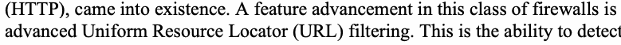
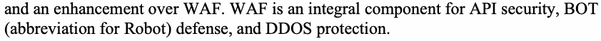
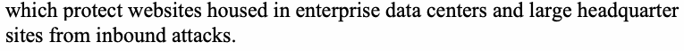
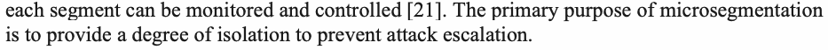
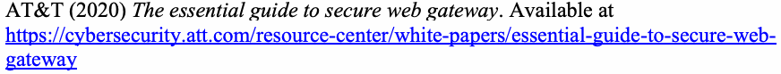
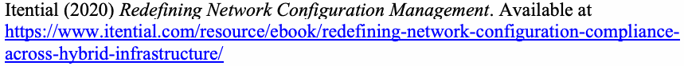

NIST Special Publication · PDF 原文抽出
Guide to a Secure Enterprise Network Landscape
セキュアなエンタープライズネットワーク環境のガイド
NIST SP 800-215（Guide to a Secure Enterprise Network Landscape）の英文と日本語訳を段落ごとに並べた閲覧用ページです。クラウド利用や分散したIT資産に対応するため、企業ネットワークのセキュリティ機能、構成、ゼロトラストネットワークアクセス、SASEなどを整理します。 翻訳は非公式です。要件の確認にはNIST の正式版 PDFを参照してください。
PDF から抽出した原文は原本との照合待ちです。
NIST Special Publication
NIST特別刊行物
未レビュー訳NIST SP 800-215
NIST SP 800-215
未レビュー訳Guide to a Secure Enterprise
安全な企業ネットワーク環境の
未レビュー訳Network Landscape
ガイド
未レビュー訳Ramaswamy Chandramouli
Ramaswamy Chandramouli
未レビュー訳This publication is available free of charge from: https://doi.org/10.6028/NIST.SP.800-215
本刊行物は https://doi.org/10.6028/NIST.SP.800-215 から無料で入手できます。
未レビュー訳NIST Special Publication
NIST特別刊行物
未レビュー訳NIST SP 800-215
NIST SP 800-215
未レビュー訳Guide to a Secure Enterprise
安全な企業ネットワーク環境の
未レビュー訳Network Landscape
ガイド
未レビュー訳Ramaswamy Chandramouli Computer Security Division Information Technology Laboratory
Ramaswamy Chandramouli コンピューターセキュリティ部門 情報技術研究所
未レビュー訳This publication is available free of charge from: https://doi.org/10.6028/NIST.SP.800-215
本刊行物は https://doi.org/10.6028/NIST.SP.800-215 から無料で入手できます。
未レビュー訳November 2022
2022年11月
未レビュー訳米国商務省の円形紋章。外周には『商務省』『アメリカ合衆国』の文字があり、中央には盾と鷲が描かれている。
U.S. Department of Commerce Gina M. Raimondo, Secretary
米国商務省 Gina M. Raimondo 商務長官
未レビュー訳National Institute of Standards and Technology
米国国立標準技術研究所
未レビュー訳Laurie E. Locascio, NIST Director and Under Secretary of Commerce for Standards and Technology
Laurie E. Locascio NIST所長兼商務省標準・技術担当次官
未レビュー訳Certain commercial entities, equipment, or materials may be identified in this document in order to describe an experimental procedure or concept adequately. Such identification is not intended to imply recommendation or endorsement by the National Institute of Standards and Technology (NIST), nor is it intended to imply that the entities, materials, or equipment are necessarily the best available for the purpose.
本書では、実験手順や概念を十分に説明するため、特定の商業組織、装置、または材料を記載する場合があります。このような記載は、米国国立標準技術研究所（NIST）による推奨または保証を意味するものではなく、記載した組織、材料、装置が当該目的に利用できる最良のものであることを意味するものでもありません。
未レビュー訳There may be references in this publication to other publications currently under development by NIST in accordance with its assigned statutory responsibilities. The information in this publication, including concepts and methodologies, may be used by federal agencies even before the completion of such companion publications. Thus, until each publication is completed, current requirements, guidelines, and procedures, where they exist, remain operative. For planning and transition purposes, federal agencies may wish to closely follow the development of these new publications by NIST.
本刊行物では、NISTが割り当てられた法定責任に従って現在策定中の他の刊行物を参照することがあります。概念や方法論を含む本刊行物の情報は、関連する刊行物が完成する前であっても連邦機関が利用できます。そのため、各刊行物が完成するまでは、既存の要件、ガイドライン、手順がある場合、それらが引き続き有効です。計画策定と移行にあたり、連邦機関はNISTによるこれらの新しい刊行物の策定状況を注意深く確認することが望まれます。
未レビュー訳Organizations are encouraged to review all draft publications during public comment periods and provide feedback to NIST. Many NIST cybersecurity publications, other than the ones noted above, are available at https://csrc.nist.gov/publications.
組織には、公開意見募集期間中にすべての草案を確認し、NISTに意見を寄せることを推奨します。上記のものを除くNISTのサイバーセキュリティ刊行物の多くは、https://csrc.nist.gov/publications で入手できます。
未レビュー訳Authority This publication has been developed by NIST in accordance with its statutory responsibilities under the Federal Information Security Modernization Act (FISMA) of 2014, 44 U.S.C. § 3551 et seq., Public Law (P.L.) 113-283. NIST is responsible for developing information security standards and guidelines, including minimum requirements for federal information systems, but such standards and guidelines shall not apply to national security systems without the express approval of appropriate federal officials exercising policy authority over such systems. This guideline is consistent with the requirements of the Office of Management and Budget (OMB) Circular A-130.
権限 本刊行物は、2014年連邦情報セキュリティ近代化法（FISMA）、合衆国法典第44編第35章第3551条以降、および公法113-283に基づく法定責任に従ってNISTが作成しました。NISTは、連邦情報システムの最低要件を含む情報セキュリティ標準とガイドラインを策定する責任を負います。ただし、国家安全保障システムについては、当該システムに関する政策権限を持つ適切な連邦当局者が明示的に承認しない限り、これらの標準とガイドラインは適用されません。本ガイドラインは行政管理予算局（OMB）通達A-130の要件に準拠しています。
未レビュー訳Nothing in this publication should be taken to contradict the standards and guidelines made mandatory and binding on federal agencies by the Secretary of Commerce under statutory authority. Nor should these guidelines be interpreted as altering or superseding the existing authorities of the Secretary of Commerce, Director of the OMB, or any other federal official. This publication may be used by nongovernmental organizations on a voluntary basis and is not subject to copyright in the United States. Attribution would, however, be appreciated by NIST.
本刊行物の内容は、法定権限に基づいて商務長官が連邦機関に義務付け、拘束力を持たせた標準やガイドラインに反するものと解釈してはなりません。また、本ガイドラインは、商務長官、OMB長官、その他の連邦当局者が既に持つ権限を変更または置き換えるものと解釈してはなりません。本刊行物は政府機関以外の組織も任意に利用でき、米国内では著作権の対象ではありません。ただし、NISTの出典表示を歓迎します。
未レビュー訳NIST Technical Series Policies Copyright, Fair Use, and Licensing Statements NIST Technical Series Publication Identifier Syntax
NIST技術シリーズの方針 著作権、公正利用、ライセンスに関する声明 NIST技術シリーズの刊行物識別子の構文
未レビュー訳Publication History Approved by the NIST Editorial Review Board on 2022-11-10
刊行履歴 NIST編集審査委員会承認日：2022年11月10日
未レビュー訳How to Cite this NIST Technical Series Publication: Chandramouli R (2022) Guide to a Secure Enterprise Network Landscape. (National Institute of Standards and Technology, Gaithersburg, MD), NIST Special Publication (SP) NIST SP 800-215. https://doi.org/10.6028/NIST.SP.800-215
このNIST技術シリーズ刊行物の引用方法：Chandramouli R（2022）『安全な企業ネットワーク環境のガイド』（米国国立標準技術研究所、メリーランド州ゲイサーズバーグ）、NIST特別刊行物（SP）800-215。https://doi.org/10.6028/NIST.SP.800-215
未レビュー訳Author ORCID iDs Ramaswamy Chandramouli: 0000-0002-7387-5858
著者のORCID iD Ramaswamy Chandramouli：0000-0002-7387-5858
未レビュー訳Contact Information sp800-215-comments@nist.gov
問い合わせ先 sp800-215-comments@nist.gov
未レビュー訳National Institute of Standards and Technology Attn: Computer Security Division, Information Technology Laboratory 100 Bureau Drive (Mail Stop 8930) Gaithersburg, MD 20899-8930
米国国立標準技術研究所 宛先：コンピューターセキュリティ部門、情報技術研究所 100 Bureau Drive（Mail Stop 8930） Gaithersburg, MD 20899-8930
未レビュー訳All comments are subject to release under the Freedom of Information Act (FOIA).
すべての意見は、情報公開法（FOIA）に基づき公開される場合があります。
未レビュー訳Abstract
要旨
未レビュー訳Access to multiple cloud services, the geographic spread of enterprise Information Technology (IT) resources (including multiple data centers), and the emergence of microservices-based applications (as opposed to monolithic ones) have significantly altered the enterprise network landscape. This document is meant to provide guidance to this new enterprise network landscape from a secure operations perspective. Hence, it starts by examining the security limitations of current network access solutions to the enterprise network. It then considers security feature enhancements to traditional network appliances in the form of point security solutions, network configurations for various security functions (e.g., application/services security, cloud services access security, device or endpoint security), security frameworks that integrate these individual network configurations (e.g., zero trust network access [ZTNA]), and the evolving wide area network (WAN) infrastructure to provide a comprehensive set of security services for the modern enterprise network landscape (e.g., secure access service edge [SASE]).
複数のクラウドサービスの利用、複数のデータセンターを含む企業の情報技術（IT）リソースの地理的な分散、モノリシック型に代わるマイクロサービス型アプリケーションの登場により、企業ネットワークの状況は大きく変化しました。本書は、安全な運用の観点から、この新しい企業ネットワーク環境に関するガイダンスを提供します。まず、企業ネットワークに対する現在のネットワークアクセス・ソリューションのセキュリティ上の限界を検討します。次に、ポイント型セキュリティ・ソリューションとしての従来型ネットワーク機器のセキュリティ機能強化、さまざまなセキュリティ機能（アプリケーション／サービスの保護、クラウドサービスへのアクセス保護、機器／エンドポイントの保護など）に対応するネットワーク構成、それらの構成を統合するセキュリティ・フレームワーク（ゼロトラスト・ネットワーク・アクセス［ZTNA］など）、および現代の企業ネットワーク環境に包括的なセキュリティ・サービスを提供する進化中の広域ネットワーク（WAN）基盤（セキュア・アクセス・サービス・エッジ［SASE］など）を扱います。
未レビュー訳Keywords
キーワード
未レビュー訳cloud access security broker (CASB); firewall; microsegmentation; secure access service edge (SASE); secure web gateway (SWG); security orchestration, automation, and response (SOAR); software-defined perimeter (SDP); software-defined wide area network (SD-WAN); virtual private network (VPN); zero trust network access (ZTNA).
クラウドアクセス・セキュリティ・ブローカー（CASB）、ファイアウォール、マイクロセグメンテーション、セキュア・アクセス・サービス・エッジ（SASE）、セキュア・ウェブ・ゲートウェイ（SWG）、セキュリティのオーケストレーション・自動化・対応（SOAR）、ソフトウェア定義境界（SDP）、ソフトウェア定義広域ネットワーク（SD-WAN）、仮想プライベートネットワーク（VPN）、ゼロトラスト・ネットワーク・アクセス（ZTNA）。
未レビュー訳Reports on Computer Systems Technology
コンピューターシステム技術に関する報告書
未レビュー訳The Information Technology Laboratory (ITL) at the National Institute of Standards and Technology (NIST) promotes the U.S. economy and public welfare by providing technical leadership for the Nation’s measurement and standards infrastructure. ITL develops tests, test methods, reference data, proof of concept implementations, and technical analyses to advance the development and productive use of information technology. ITL’s responsibilities include the development of management, administrative, technical, and physical standards and guidelines for the cost-effective security and privacy of other than national security-related information in federal information systems. The Special Publication 800-series reports on ITL’s research, guidelines, and outreach efforts in information system security, and its collaborative activities with industry, government, and academic organizations.
米国国立標準技術研究所（NIST）の情報技術研究所（ITL）は、米国の測定・標準基盤に技術的リーダーシップを発揮し、米国経済と公共の福祉を促進しています。ITLは、情報技術の発展と生産的な利用を進めるため、試験、試験方法、参照データ、概念実証実装、技術分析を開発します。ITLは、連邦情報システムにおける国家安全保障関連以外の情報の費用対効果に優れたセキュリティとプライバシーを確保するため、管理、運用、技術、物理面の標準やガイドラインを策定します。特別刊行物800シリーズは、情報システム・セキュリティに関するITLの研究、ガイドライン、普及活動、および産業界、政府、学術機関との協力活動を報告しています。
未レビュー訳Patent Disclosure Notice
特許開示に関する通知
未レビュー訳NOTICE: ITL has requested that holders of patent claims whose use may be required for compliance with the guidance or requirements of this publication disclose such patent claims to ITL. However, holders of patents are not obligated to respond to ITL calls for patents and ITL has not undertaken a patent search in order to identify which, if any, patents may apply to this publication. As of the date of publication and following call(s) for the identification of patent claims whose use may be required for compliance with the guidance or requirements of this publication, no such patent claims have been identified to ITL. No representation is made or implied by ITL that licenses are not required to avoid patent infringement in the use of this publication.
通知：ITLは、本刊行物のガイダンスまたは要件への準拠に使用が必要となる可能性のある特許請求項を保有する者に対し、当該請求項をITLに開示するよう求めています。ただし、特許権者にITLの特許開示要請へ応じる義務はなく、本刊行物に適用される可能性のある特許を特定するための特許調査もITLは実施していません。本刊行物の日付時点で、また準拠に必要な可能性のある特許請求項の特定を求めた後も、そのような特許請求項はITLに報告されていません。本刊行物の使用において特許侵害を避けるためのライセンスが不要であると、ITLが表明または示唆するものではありません。
未レビュー訳Table of Contents
目次
未レビュー訳Executive Summary — 1
エグゼクティブサマリー — 1
未レビュー訳Introduction — 2
序論 — 2
未レビュー訳Structural Implications of Drivers on the Enterprise Network Landscape — 2
企業ネットワーク環境の変化要因がもたらす構造的影響 — 2
未レビュー訳Security Implications of Drivers on the Enterprise Network Landscape — 3
企業ネットワーク環境の変化要因がもたらすセキュリティ上の影響 — 3
未レビュー訳The Need for a Security Guide — 3
セキュリティガイドの必要性 — 3
未レビュー訳Scope — 4
適用範囲 — 4
未レビュー訳Target Audience — 4
対象読者 — 4
未レビュー訳Organization of This Document — 4
本書の構成 — 4
未レビュー訳Traditional Enterprise Network Access Approaches and Their Limitations — 5
従来の企業ネットワーク・アクセス方式とその限界 — 5
未レビュー訳Limitations of Network Perimeter-based Protections — 5
ネットワーク境界型防御の限界 — 5
未レビュー訳Limitations of VPN-based Access — 5
VPNベースのアクセスの限界 — 5
未レビュー訳2.3 Limitation of MPLS Technology as Enterprise WANs — 6
2.3 企業WANとしてのMPLS技術の限界 — 6
未レビュー訳2.4 Limitation of Authentication Infrastructure — 6
2.4 認証基盤の限界 — 6
未レビュー訳Network Security Appliances in the Enterprise Network Landscape — 8
企業ネットワーク環境におけるネットワーク・セキュリティ機器 — 8
未レビュー訳Cloud Access Security Broker (CASB) — 8
クラウドアクセス・セキュリティ・ブローカー（CASB） — 8
未レビュー訳Enhanced Firewall Capabilities — 8
ファイアウォール機能の強化 — 8
未レビュー訳Appliance-set with Integrated Functions — 10
統合機能を備えた機器群 — 10
未レビュー訳Network Security Automation Tools — 11
ネットワーク・セキュリティ自動化ツール — 11
未レビュー訳3.4.1. Network Monitoring and Observability Tools — 12
3.4.1 ネットワーク監視・可観測性ツール — 12
未レビュー訳3.4.2. Automated Network Provisioning Tools — 12
3.4.2 自動ネットワーク・プロビジョニングツール — 12
未レビュー訳Networking Appliances as Services — 13
サービスとしてのネットワーク機器 — 13
未レビュー訳Network Configurations for Basic Security Functions — 14
基本的なセキュリティ機能のためのネットワーク構成 — 14
未レビュー訳4.1 Conceptual Underpinning – Contextual Information — 14
4.1 概念的基盤 — コンテキスト情報 — 14
未レビュー訳4.2 Network Configuration for Device Management — 15
4.2 デバイス管理のためのネットワーク構成 — 15
未レビュー訳4.3 Network Configuration for User Authentication — 16
4.3 ユーザー認証のためのネットワーク構成 — 16
未レビュー訳4.4 Network Configuration for Device Authentication and Health Monitoring — 16
4.4 デバイス認証と健全性監視のためのネットワーク構成 — 16
未レビュー訳4.5 Network Configuration for Authorizing Application/Service Access — 16
4.5 アプリケーション／サービス・アクセス認可のためのネットワーク構成 — 16
未レビュー訳4.6 Network Configurations for Preventing Attack Escalation — 16
4.6 攻撃の拡大防止のためのネットワーク構成 — 16
未レビュー訳Enterprise-Wide Network Security Framework – Zero Trust Network Access (ZTNA)
企業全体のネットワーク・セキュリティ・フレームワーク — ゼロトラスト・ネットワーク・アクセス（ZTNA）
未レビュー訳17
未レビュー訳5.1 Microsegmentation — 17
5.1 マイクロセグメンテーション — 17
未レビュー訳5.1.1 Prerequisites for Implementing Microsegmentation — 18
5.1.1 マイクロセグメンテーション実装の前提条件 — 18
未レビュー訳5.1.2 Microsegmentation – Implementation Approaches — 19
5.1.2 マイクロセグメンテーションの実装方法 — 19
未レビュー訳5.2 Software-defined Perimeter (SDP) — 21
5.2 ソフトウェア定義境界（SDP） — 21
未レビュー訳Secure Wide Area Network Infrastructure for an Enterprise Network — 23
企業ネットワーク向けのセキュアな広域ネットワーク基盤 — 23
未レビュー訳Common Requirements for a Secure SD-WAN — 23
セキュアSD-WANの共通要件 — 23
未レビュー訳Specific Requirements for SD-WANs for Cloud Access — 24
クラウドアクセス向けSD-WANの個別要件 — 24
未レビュー訳Requirements for an Integrated Security Services Architecture for SD-WAN — 26
SD-WAN向け統合セキュリティサービス・アーキテクチャの要件 — 26
未レビュー訳Summary and Conclusions — 28
要約と結論 — 28
未レビュー訳References — 29
参考文献 — 29
未レビュー訳List of Figures
図一覧
未レビュー訳Fig. 1. Segment-based Microsegmentation — 20
図1 セグメントベースのマイクロセグメンテーション — 20
未レビュー訳Acknowledgments
謝辞
未レビュー訳The author would like to express his thanks to Isabel Van Wyk of NIST for her detailed editorial review both for the public comment version as well as for the final publication.
著者は、公開意見募集版と最終刊行物の両方について詳細な編集レビューを行ったNISTのIsabel Van Wyk氏に感謝します。
未レビュー訳Executive Summary
エグゼクティブサマリー
未レビュー訳The enterprise network landscape has undergone tremendous changes in the last decade due to the following three drivers:
過去10年間で、企業ネットワーク環境は次の3つの要因により大きく変化しました。
未レビュー訳•Enterprise access to multiple cloud services,
•企業による複数のクラウドサービスへのアクセス、
未レビュー訳•The geographical spread of enterprise-based (on-premises) IT resources (e.g., multiple data centers, headquarters, and branch offices), and
•企業のITリソース（オンプレミス）の地理的な分散（複数のデータセンター、本社、支社など）、および
未レビュー訳•Changes to application architecture from being monolithic to a set of loosely coupled microservices.
•アプリケーション・アーキテクチャがモノリシック型から、疎結合のマイクロサービス群へと変化したこと。
未レビュー訳The impacts of these drivers on the security of the enterprise network landscape include:
これらの要因が企業ネットワーク環境のセキュリティに与える影響は次のとおりです。
未レビュー訳•Disappearance of the concept of a network perimeter that can be protected and the necessity to protect each endpoint (device or service) that treats it as a perimeter
•保護対象となるネットワーク境界という概念が失われ、境界として扱われる各エンドポイント（デバイスまたはサービス）を個別に保護する必要が生じる。
未レビュー訳•Increase in attack surface due to sheer multiplicity of IT resources (computing, networking, storage) and components
•ITリソース（コンピューティング、ネットワーク、ストレージ）や構成要素が大幅に増え、攻撃対象領域が拡大する。
未レビュー訳•Escalation of attacks across several network boundaries leveraging the connectivity features
•接続機能を悪用した攻撃が複数のネットワーク境界を越えて拡大する。
未レビュー訳This document is meant to provide guidance to this new enterprise network landscape from a secure operations perspective. The adopted methodology first considers the security challenges that the new network landscape poses and examines the limitations of current network access technologies. It then shows how solutions for meeting the challenges have evolved from being security function-specific to a security framework to a comprehensive security infrastructure that provides a holistic set of security services. Specific areas addressed include:
本書は、安全な運用の観点から、この新しい企業ネットワーク環境に関するガイダンスを提供します。採用した方法論では、まず新たなネットワーク環境がもたらすセキュリティ課題を検討し、現在のネットワークアクセス技術の限界を分析します。次に、課題に対処するソリューションが、個別のセキュリティ機能からセキュリティ・フレームワークへ、さらに包括的なセキュリティ基盤へと進化し、統合的なセキュリティサービス群を提供する様子を示します。具体的には次の分野を扱います。
未レビュー訳•Feature enhancements to traditional network security appliances
•従来型ネットワーク・セキュリティ機器の機能強化
未レビュー訳•Secure enterprise networking configurations for specific security functions
•個別のセキュリティ機能に対応する、安全な企業ネットワーク構成
未レビュー訳•Security frameworks that integrate individual network configurations
•個別のネットワーク構成を統合するセキュリティ・フレームワーク
未レビュー訳•Evolving wide area network (WAN) infrastructure that provides a comprehensive set of security services
•包括的なセキュリティサービス群を提供する、進化中の広域ネットワーク（WAN）基盤
未レビュー訳Based on the drivers outlined above, an enterprise network in the context of this document encompasses the following:
上述した変化要因を踏まえ、本書では企業ネットワークに次のものを含めます。
未レビュー訳原本の表画像

•Various local networks on enterprise premises (e.g., enterprise data centers, headquarters, and branch offices)
•企業構内の各種ローカルネットワーク（企業データセンター、本社、支社など）
未レビュー訳•The portion of a wide area network that is used by the enterprise to connect its various geographically dispersed locations and cloud service access points
•地理的に分散した各拠点とクラウドサービスのアクセスポイントを接続するために企業が利用する広域ネットワークの一部
未レビュー訳Introduction
序論
未レビュー訳The enterprise network landscape has undergone a significant transformation in the last decade. The drivers for this transformation are (a) enterprise access to multiple cloud services, (b) the geographic spread of enterprise-owned (on-premises) IT resources (e.g., in headquarters, multiple branch offices, and data centers), and (c) changes to application architecture from being monolithic to a set of loosely coupled microservices – often with a dedicated infrastructure (called the service mesh) that provides all application services, including security. The high-level impacts of these drivers on the security of the current enterprise network landscape are (a) the disappearance of the concept of a perimeter associated with the enterprise network; (b) an increase in attack surface due to the sheer multiplicity of IT resource components associated with computing, storage, and network appliances; and (c) the escalation of attacks across several network boundaries leveraging connectivity features. Before providing guidance for secure operations in this new network landscape, this document will consider the structural and security implications of the drivers to enhance understanding of its components and data flows.
過去10年間で、企業ネットワーク環境は大きく変わりました。変化の要因は、(a) 企業が複数のクラウドサービスにアクセスすること、(b) 企業所有のITリソース（オンプレミス）が地理的に分散したこと（本社、複数の支社、データセンターなど）、(c) アプリケーション・アーキテクチャがモノリシック型から疎結合のマイクロサービス群へ変化したことです。マイクロサービスでは、セキュリティを含むすべてのアプリケーションサービスを提供するサービスメッシュと呼ばれる専用基盤を備える場合もあります。これらの要因が現在の企業ネットワーク環境のセキュリティに与える主な影響は、(a) 企業ネットワークに関連する境界という概念の消失、(b) コンピューティング、ストレージ、ネットワーク機器に関連するITリソース構成要素の大幅な増加による攻撃対象領域の拡大、(c) 接続機能を悪用した複数のネットワーク境界をまたぐ攻撃の拡大です。この新しいネットワーク環境で安全な運用を実現するガイダンスを示す前に、構成要素とデータフローへの理解を深めるため、これらの要因がもたらす構造面とセキュリティ面の影響を検討します。
未レビュー訳Structural Implications of Drivers on the Enterprise Network Landscape
企業ネットワーク環境の変化要因がもたらす構造的影響
未レビュー訳In order to have a good structural view of the current enterprise network landscape, it is necessary to look at the current enterprise IT environment in general. The IT environment now consists of:
現在の企業ネットワーク環境の構造を適切に把握するには、現在の企業IT環境全般を見る必要があります。IT環境は現在、次の要素で構成されます。
未レビュー訳•Subscription to multiple cloud services, such as Infrastructure as a Service (IaaS) for computing, Software as a Service (SaaS) for applications, Platform as a Service (PaaS) for an application development platform, and other cloud services (e.g., identity as a service [IDaaS] for authentication)
•複数のクラウドサービスの利用。たとえば、コンピューティング向けのサービスとしてのインフラストラクチャ（IaaS）、アプリケーション向けのサービスとしてのソフトウェア（SaaS）、アプリケーション開発基盤向けのサービスとしてのプラットフォーム（PaaS）、認証向けのサービスとしてのアイデンティティ（IDaaS）など。
未レビュー訳•Enterprise IT applications (on-premises) that are located at corporate headquarters and geographically distributed branch offices and data centers
•本社、地理的に分散した支社、データセンターに設置された企業ITアプリケーション（オンプレミス）
未レビュー訳•IT applications that range from being monolithic to being made up of loosely coupled microservices, each hosted on heterogeneous platforms
•モノリシック型から、異種プラットフォーム上で個別にホストされる疎結合マイクロサービス群まで、さまざまな形態のITアプリケーション
未レビュー訳•Presence of edge computing devices, including the Internet of Things (IoT), in some environments
•一部の環境における、モノのインターネット（IoT）を含むエッジコンピューティング機器の存在
未レビュー訳The above scenarios call for widespread connectivity between IT systems that now defines the current enterprise network landscape. Connectivity, in turn, involves:
上記の状況により、ITシステム間で広範な接続が必要となり、現在の企業ネットワーク環境が形作られています。接続には、次のものが含まれます。
未レビュー訳•Connectivity between IT resources (e.g., servers for computing and storage) in data centers (network fabric)
•データセンター内のITリソース（コンピューティング・サーバーやストレージ・サーバーなど）間の接続（ネットワーク・ファブリック）
未レビュー訳•Connectivity between IT resources within a corporate office or branch office (e.g., Wireless Fidelity (Wi-Fi), Local Area Network - LAN, and Virtual Local Area Network -
•企業の本社や支社内のITリソース間の接続（Wi-Fi、ローカルエリアネットワーク（LAN）、仮想ローカルエリアネットワーク（
未レビュー訳VLAN)
VLAN）
未レビュー訳•Connectivity for users to remotely access IT resources from home, travel locations, branch offices, and corporate offices using wide area networks (WANs), which use multiple networks such as the internet, Multiprotocol Label Switching (MPLS), and – in some instances – cellular networks (e.g., 4G/LTE, 5G).
•広域ネットワーク（WAN）を使って、自宅、出張先、支社、企業オフィスからITリソースにリモートアクセスするユーザーのための接続。WANは、インターネット、マルチプロトコル・ラベル・スイッチング（MPLS）、場合によっては携帯電話網（4G/LTE、5Gなど）を含む複数のネットワークを利用します。
未レビュー訳•Connectivity to cloud services provided by a cloud service provider (CSP) through a virtual private network (VPN) or subscription to WAN services (premises-based equipment licenses or cloud-based)
•クラウドサービス・プロバイダー（CSP）が提供するクラウドサービスへの、仮想プライベートネットワーク（VPN）経由の接続、またはWANサービス（拠点設置機器のライセンス型もしくはクラウド型）の契約
未レビュー訳Security Implications of Drivers on the Enterprise Network Landscape
企業ネットワーク環境の変化要因がもたらすセキュリティ上の影響
未レビュー訳Now consider the immediate security implications of these drivers on the enterprise network landscape. Subscription to multiple cloud services: Accessing cloud services from multiple cloud providers has become the norm for many enterprises. This trend is motivated not only by the need to avoid a cloud-vendor locked-in situation but also by different CSPs offering different value-added functions for different services (e.g., IaaS, SaaS). The consequence of this trend is that – from an enterprise point of view – the following networks have become extensions of the enterprise network and, thus, come under the scope of enterprise network management with attendant responsibilities for ensuring that security protections become a critical function.
これらの変化要因が企業ネットワーク環境にもたらす直接的なセキュリティ上の影響を考えます。複数のクラウドサービスの契約：複数のクラウド・プロバイダーが提供するサービスへのアクセスは、多くの企業で一般的になっています。この傾向は、クラウド・ベンダーへのロックインを避ける必要だけでなく、各CSPがサービス（IaaS、SaaSなど）ごとに異なる付加価値機能を提供していることにも起因します。その結果、企業の観点では次のネットワークが企業ネットワークの延長となり、企業ネットワーク管理の対象に含まれます。これらのネットワークのセキュリティ保護は、企業が担うべき重要な責任となります。
未レビュー訳•Network used for accessing the cloud services (e.g., VPNs or subscribed WANs)
•クラウドサービスへのアクセスに使うネットワーク（VPNまたは契約したWANなど）
未レビュー訳•Intercloud network (since communication between one CSP and another may be inevitable)
•クラウド間ネットワーク（一方のCSPから別のCSPへの通信が避けられない場合があるため）
未レビュー訳•The network inside the cloud provider that needs to be navigated to access the subscribed services (e.g., VPC, VNET).
•契約したサービスへアクセスする際に通過する必要がある、クラウド・プロバイダー内のネットワーク（VPC、VNetなど）
未レビュー訳Geographic spread of IT resources and users: IT resources are now widely distributed not only due to the geographic spread of enterprise premises (e.g., headquarters and branch offices) but also for reliability and disaster recovery (DR) considerations. Additionally, the applications hosted in those resources are now accessed by users from various enterprise premises (through the enterprise network) as well as from home and public locations (e.g., hotels and cafes) through multiple devices, such as desktops, laptops, and mobile phones. Ensuring secure access from these varied locations and devices becomes the responsibility of the enterprise. Changes in application architecture: Application architectures – especially those of cloud-native applications – have changed from being monolithic to being microservices-based in order to meet the deployment agility and modular scalability requirements. This, combined with DevSecOps (a paradigm covering Development, Security and Operations) primitives such as continuous integration/continuous deployment (CI/CD) pipelines for the development and deployment of software, has improved the security profile of the applications but has also introduced new threat vectors related to the CI/CD workflows themselves.
ITリソースとユーザーの地理的な分散：ITリソースは、企業拠点（本社、支社など）の分散に加え、信頼性や災害復旧（DR）の観点からも広く分散しています。これらのリソース上でホストされるアプリケーションには、企業拠点から企業ネットワーク経由でアクセスするだけでなく、自宅やホテル・カフェなどの公共の場所からデスクトップ、ノートパソコン、携帯電話など複数のデバイスを使ってアクセスするようになりました。多様な場所やデバイスからの安全なアクセスを確保する責任は企業が負います。アプリケーション・アーキテクチャの変化：アプリケーション、特にクラウドネイティブ・アプリケーションのアーキテクチャは、迅速な導入とモジュール単位の拡張性の要件を満たすため、モノリシック型からマイクロサービス型へ変化しました。継続的インテグレーション／継続的デリバリー（CI/CD）パイプラインなど、開発、セキュリティ、運用を統合するDevSecOpsの基本要素と相まって、アプリケーションのセキュリティ態勢は改善しましたが、CI/CDワークフロー自体に関連する新たな脅威経路も生じています。
未レビュー訳The Need for a Security Guide
セキュリティガイドの必要性
未レビュー訳Based on the security implications discussed in the previous subsection, there is a new security scenario in the current enterprise network landscape that needs to be addressed through security guidance. Some of the salient aspects of this scenario are:
前節で述べたセキュリティ上の影響を踏まえると、現在の企業ネットワーク環境には、セキュリティ・ガイダンスを通じて対処すべき新たなセキュリティ状況があります。主な特徴は次のとおりです。
未レビュー訳•Ubiquitous access locations, ubiquitous hosting locations of the application components, and multiple WAN transport protocols have caused shifts in security focuses, goals, and principles.
•どこからでもアクセスでき、アプリケーション構成要素のホスティング場所も多様化し、WANの伝送プロトコルも複数あることで、セキュリティの重点、目標、原則が変化した。
未レビュー訳•The security focus has enlarged from being network-centric (i.e., internal/corporate network versus external/public internet) to centering on the user, device, endpoint, and service.
•セキュリティの重点がネットワーク中心（内部／企業ネットワークと外部／公開インターネットの区別）から、ユーザー、デバイス、エンドポイント、サービスを中心とするものへ拡大した。
未レビュー訳•The new trust relationship has to not only be based on identity or the location of the access but enhanced to include validation of each access request (not just at the beginning of an access session), as well as the applicable set of contextual information associated with the user, device, or service.
•新たな信頼関係は、IDやアクセス場所だけに基づくのではなく、アクセス・セッションの開始時だけでなく各アクセス要求を検証し、さらにユーザー、デバイス、サービスに関連するコンテキスト情報も含める必要がある。
未レビュー訳Scope
適用範囲
未レビュー訳The scope of this document includes:
本書の適用範囲は次のとおりです。
未レビュー訳•A structural view of the enterprise network landscape based on the distribution of IT resources and the consequent security challenges it poses
•ITリソースの分散状況と、それがもたらすセキュリティ課題に基づく企業ネットワーク環境の構造的な概観
未レビュー訳•Emerging and state-of-practice solutions in terms of feature sets and requirements to address the security challenges; solutions discussed will focus on the functional and operational levels
•セキュリティ課題に対処するための新興ソリューションおよび現在の実務水準にあるソリューションの機能群と要件。取り上げるソリューションは、機能面と運用面に焦点を当てます。
未レビュー訳Target Audience
対象読者
未レビュー訳This guidance is intended for network design architects and network security solution architects in organizations with a hybrid IT environment (consisting of both on-premises and cloud-based applications) with a combination of legacy and microservices-based (i.e., cloud-native) applications.
本ガイダンスは、オンプレミスとクラウドの両方のアプリケーションを含むハイブリッドIT環境で、レガシー・アプリケーションとマイクロサービス型（クラウドネイティブ）アプリケーションが混在する組織のネットワーク設計アーキテクトおよびネットワーク・セキュリティ・ソリューション・アーキテクトを対象とします。
未レビュー訳Organization of This Document
本書の構成
未レビュー訳The organization of this document is as follows:
本書は次のように構成されています。
未レビュー訳•Section 2 considers traditional network access principles, technologies, and limitations in the context of the current enterprise network landscape.
•第2節では、現在の企業ネットワーク環境を踏まえ、従来のネットワーク・アクセスの原則、技術、限界を検討します。
未レビュー訳•Section 3 provides a brief functional description of network security appliances – some new, some traditional (e.g., firewall) – that have enhanced capabilities to meet the security needs of the current network landscape.
•第3節では、現在のネットワーク環境のセキュリティ要件を満たすよう機能を強化した、新旧のネットワーク・セキュリティ機器（ファイアウォールなど）の機能を簡潔に説明します。
未レビュー訳•Section 4 outlines various network configurations that have evolved specifically for realizing security functions (e.g., device authentication).
•第4節では、デバイス認証などのセキュリティ機能を実現するために発展した各種ネットワーク構成を概説します。
未レビュー訳•Section 5 considers a framework (i.e., ZTNA) that integrates two or more of these stand-alone network configurations to realize an abstract enterprise architecture (zero trust architecture [ZTA]) and looks at two candidate enterprise network security techniques – microsegmentation and software-defined perimeter (SDP).
•第5節では、単独のネットワーク構成を2つ以上統合して抽象的な企業アーキテクチャ（ゼロトラスト・アーキテクチャ［ZTA］）を実現するフレームワーク（ZTNA）を検討し、企業ネットワーク・セキュリティ技術の候補であるマイクロセグメンテーションとソフトウェア定義境界（SDP）を取り上げます。
未レビュー訳•Section 6 focuses on the evolution of the WAN portion of the enterprise network landscape and enhanced offerings of the WAN services with global spread with a built-in security service infrastructure.
•第6節では、企業ネットワーク環境のWAN部分の進化と、世界規模で展開されるWANサービスに組み込まれたセキュリティサービス基盤を取り上げます。
未レビュー訳•Section 7 provides the summary and conclusions.
•第7節では、要約と結論を示します。
未レビュー訳Traditional Enterprise Network Access Approaches and Their Limitations
従来の企業ネットワーク・アクセス方式とその限界
未レビュー訳Section 1 outlined the structural and security implications of the drivers for the current enterprise network landscape, which have impacted the mechanics of secure access to applications through the network. This section analyzes the security limitations of traditional network access approaches.
第1節では、現在の企業ネットワーク環境を形作る変化要因がもたらす構造面とセキュリティ面の影響を概説しました。これらの影響は、ネットワークを介してアプリケーションへ安全にアクセスする仕組みに及んでいます。本節では、従来のネットワーク・アクセス方式のセキュリティ上の限界を分析します。
未レビュー訳•Limitation of network perimeter-based protections
•ネットワーク境界型防御の限界
未レビュー訳•Limitations of VPN-based access
•VPNベースのアクセスの限界
未レビュー訳•Limitations of MPLS technology as enterprise WANs
•企業WANとしてのMPLS技術の限界
未レビュー訳•Limitations of authentication infrastructure
•認証基盤の限界
未レビュー訳Limitations of Network Perimeter-based Protections
ネットワーク境界型防御の限界
未レビュー訳Early solutions for secure enterprise network access were geared toward environments with well-defined network perimeters. All enterprise IT resources were endpoints of enterprise LANs (usually defined as a floor in a large enterprise, building, or small campus), and multiple LANs connected together inside a defined building or campus constituted the internal corporate network. Entry points into this corporate network were protected using devices called firewalls. In this environment, all devices and users within firewalled LANs were totally trusted and, hence, considered safe for accessing application resources. However, the following factors have annulled the concept of that perimeter and greatly expanded the attack surface:
初期の安全な企業ネットワーク・アクセス・ソリューションは、明確なネットワーク境界を持つ環境を想定していました。企業のすべてのITリソースは企業LANのエンドポイントであり（大規模企業では通常、フロア、建物、または小規模なキャンパスの単位で定義）、明確な建物やキャンパス内で複数のLANを相互接続して内部の企業ネットワークを構成していました。この企業ネットワークへの入口は、ファイアウォールと呼ばれる機器で保護されていました。この環境では、ファイアウォールで保護されたLAN内のすべてのデバイスとユーザーは完全に信頼され、アプリケーション・リソースに安全にアクセスできると見なされていました。しかし、次の要因によってその境界という概念が失われ、攻撃対象領域が大幅に拡大しました。
未レビュー訳•Distributed nature of the application into ones located within a corporate data center, remote branch offices, and multiple cloud locations
•企業データセンター、遠隔支社、複数のクラウド上にアプリケーションが分散していること
未レビュー訳| • Perimeter approach based on the premise that the threat originates outside of the network, | |
| which is why most perimeter security solutions (e.g., intrusion prevention system - IPS, | |
| intrusion detection systems - IDS, firewalls) focus only on north-south traffic (i.e., | |
| ingress, which refers to traffic that originates from outside of the local network and | |
| destined for endpoints in the local cluster network) | . However, over 75 % of network |
| traffic is now east-west (i.e., within the local network) or server-to-server (due to | |
| applications being based on microservices), which is largely invisible to security teams, | |
| though some visibility is now sought through endpoint detection and response (EDR) | |
| solutions that collect security telemetry data on endpoints. Any threat that is already | |
| inside of a network can move laterally and remain undetected for days or even months. |
原本の表画像

| • 境界型のアプローチは、脅威がネットワーク外部から発生することを前提とする。 | |
| そのため、ほとんどの境界型防御ソリューション（侵入防止システム（IPS）、 | |
| 侵入検知システム（IDS）、ファイアウォールなど）は南北トラフィック（すなわち、 | |
| ローカルネットワークの外から発生し、ローカルクラスターネットワーク内のエンドポイントを宛先とするトラフィック） | |
| のみを対象にします。 | しかし、ネットワーク・トラフィックの75%超は |
| 現在、東西トラフィック（ローカルネットワーク内）またはサーバー間のトラフィックです（ | |
| アプリケーションがマイクロサービスに基づくため）。これらはセキュリティチームから | |
| ほとんど見えません。エンドポイント検知・対応（EDR） | |
| ソリューションを利用してエンドポイントのセキュリティ・テレメトリを収集し、可視性を高める動きもありますが、すでに | |
| ネットワーク内部にいる脅威はラテラルムーブメントで移動し、数日から数か月間検知されないことがあります。 |
•Edge computing [1], where much of the computing takes place close to the location of multiple IoT devices that may be geographically dispersed
•エッジコンピューティング[1]。地理的に分散している複数のIoTデバイスの近くで、コンピューティング処理の多くを実行します。
未レビュー訳•Users located both within and outside of the corporate network, such as in homes, remote branch offices, and public locations (e.g., hotels, pubs); some enterprises must also provide access to ecosystem partners, who may be on their own corporate networks
•企業ネットワークの内外にいるユーザー。自宅、遠隔支社、ホテルやパブなどの公共の場所から接続するユーザーが含まれます。企業によっては、独自の企業ネットワークを持つエコシステム・パートナーにもアクセスを提供する必要があります。
未レビュー訳Limitations of VPN-based Access
VPNベースのアクセスの限界
未レビュー訳The increase in teleworking employees due to the pandemic has necessitated a means for secure access to IT resources inside an enterprise network in the form of VPNs. A VPN allows organizations to extend perimeter-based security across a public network. Security is enabled by setting up a secure tunnel in the public network using protocols such as Internet Protocol Security (IPSEC) and Transport Layer Security (TLS). However, there are some limitations and security risks associated with VPNs.
パンデミックにより在宅勤務の従業員が増え、VPNを使って企業ネットワーク内のITリソースへ安全にアクセスする手段が必要になりました。VPNを使うと、組織は公開ネットワーク上に境界型セキュリティを拡張できます。インターネット・プロトコル・セキュリティ（IPsec）やトランスポート層セキュリティ（TLS）などのプロトコルで公開ネットワーク内に安全なトンネルを構築し、セキュリティを確保します。しかし、VPNにはいくつかの制約とセキュリティリスクがあります。
未レビュー訳•An increasing trend involves the movement of corporate resources to the cloud and the use of mobile devices. The VPN connections that remote users establish terminate at the VPN concentrators located at the edge of the corporate network. Hence, even traffic generated during those users’ cloud service access lands at the corporate internet edge and has to be validated and routed back to the internet to access the cloud resources. This phenomenon is called “hair-pinning”, results in extra distance, increases network latency, and has the potential to cause traffic bottlenecks.
•企業リソースをクラウドへ移行し、モバイルデバイスを使用する傾向が強まっています。リモートユーザーが確立するVPN接続は、企業ネットワークの境界に配置されたVPN集約装置で終端します。そのため、リモートユーザーがクラウドサービスへアクセスする際に生成したトラフィックも企業のインターネット境界に到達し、クラウド・リソースへアクセスするために検証とインターネットへの再ルーティングが必要です。この現象は「ヘアピニング」と呼ばれ、経路が余分に長くなってネットワーク遅延が増加し、トラフィックのボトルネックを生む可能性があります。
未レビュー訳•Periodic disclosure of vulnerabilities. Two recent examples are “session hijacking” and “account ID extraction” [2].
•脆弱性が継続的に公表されています。最近の例には「セッションハイジャック」と「アカウントIDの抽出」があります[2]。
未レビュー訳•When VPNs are deployed as hardware appliances, it puts a limit on the number of users who can connect through the network gateway and limits scalability.
•VPNをハードウェア機器として導入すると、ネットワーク・ゲートウェイ経由で接続できるユーザー数に上限が生じ、拡張性が制限されます。
未レビュー訳•VPNs often require agents, which makes providing access in scenarios with a high volume of third-party users (contractors and partners) difficult [53].
•VPNではエージェントが必要になることが多く、請負業者やパートナーなど多数の第三者ユーザーにアクセスを提供する場面が難しくなります[53]。
未レビュー訳2.3 Limitation of MPLS Technology as Enterprise WANs
2.3 企業WANとしてのMPLS技術の限界
未レビュー訳Multi-protocol label switching (MPLS) technology is used for enterprise WANs, but the wide geographic span of an enterprise network with multiple data centers and cloud services has imposed some limitations on its use (in addition to cost).
マルチプロトコル・ラベル・スイッチング（MPLS）技術は企業WANで使われますが、複数のデータセンターやクラウドサービスを含む企業ネットワークの地理的な広がりにより、費用面に加えて利用上の制約が生じています。
未レビュー訳•The geographic span of enterprise IT resources and subsequent networking connections have made traversal through the internet inevitable for many portions of the enterprise’s access network. Since MPLS is a different network, it provides access to the internet only through designated and limited access points (similar to the hair pinning phenomenon). This increases latency for time-sensitive corporate applications.
•企業ITリソースの地理的な分散と、それに伴うネットワーク接続のため、企業のアクセス・ネットワークの多くでインターネットを経由することが避けられなくなりました。MPLSは別個のネットワークであるため、ヘアピニングと同様に、指定された限られたアクセスポイントを通じてしかインターネットへアクセスできません。このため、時間に敏感な企業アプリケーションの遅延が増加します。
未レビュー訳•Given the different networking technology, the appliances and subsequent configuration procedures are different, making network management a complex task.
•異なるネットワーク技術が使われるため、機器とその構成手順も異なり、ネットワーク管理が複雑になります。
未レビュー訳2.4 Limitation of Authentication Infrastructure
2.4 認証基盤の限界
未レビュー訳In the current network landscape, which consists of access to on-premises and cloud-based applications, there exist authentication infrastructures (both enterprise and cloud-based) to authenticate end users using various token-based approaches (e.g., Jason Web Tokens [JWT] or Security Assertion Markup Language (SAML) 2.0 tokens). This infrastructure by itself is not sufficient to meet the authentication needs of the environment that contains microservices-based applications, which are becoming ubiquitous in both enterprise and cloud environments. This class of application consists of loosely coupled microservices that require the generation of multiple interservice requests to complete a business process or transaction. This scenario, in turn, needs an infrastructure for also authenticating services (in addition to users) with special requirements as follows:
現在のネットワーク環境では、オンプレミスとクラウドの両方のアプリケーションにアクセスし、エンドユーザーを認証するため、企業内およびクラウド上の認証基盤が整備されています。これらの基盤では、JSON Web Token（JWT）やSecurity Assertion Markup Language（SAML）2.0トークンなど、さまざまなトークン方式が使われています。しかし、企業環境とクラウド環境の双方で普及しつつあるマイクロサービス型アプリケーションの認証ニーズを、これらの基盤だけで満たすことはできません。この種のアプリケーションは疎結合のマイクロサービスで構成され、業務プロセスやトランザクションの完了に複数のサービス間要求を必要とします。そのため、ユーザーだけでなくサービス自体も認証する基盤が必要であり、特に次の要件があります。
未レビュー訳原本の表画像

•The location of the service may change due to the virtualized nature of the application hosting environment (e.g., migration to different Virtual Machines (VMs), migration to a different pod in containerized applications). Hence, the identity should abstract the environment hosting the service.
•アプリケーションの実行環境は仮想化されているため、サービスの配置場所が変わることがあります（別の仮想マシン（VM）への移行、コンテナ型アプリケーションの別のポッドへの移動など）。そのため、サービスのIDは、サービスをホストする環境を抽象化する必要があります。
未レビュー訳•The validation of identity (authentication) and authorization need to be done continuously (and not just at the beginning of a service request) as the risk profile associated with the request may change if there are multiple entities involved or if there are changes in behavioral patterns that need to be included as a validation parameter and monitored.
•IDの検証（認証）と認可は、サービス要求の開始時だけでなく継続的に行う必要があります。関係する主体が複数ある場合や、検証パラメーターとして含めて監視すべき行動パターンの変化がある場合、要求に伴うリスク特性が変化することがあるためです。
未レビュー訳Network Security Appliances in the Enterprise Network Landscape
企業ネットワーク環境におけるネットワーク・セキュリティ機器
未レビュー訳This section considers some new network security appliances and enhanced features in established appliances for meeting the security needs of the current network landscape. These can simply be viewed as point security solutions, but evaluating their functions and features will provide an understanding of the effectiveness of network configurations and technologies that form part of the integrated solutions that will be discussed in Sections 4 and 5, respectively.
本節では、現在のネットワーク環境のセキュリティ要件を満たすための新しいネットワーク・セキュリティ機器と、既存機器の機能強化を検討します。これらは個別のポイント型セキュリティ・ソリューションと捉えることができますが、その機能を評価することで、第4節と第5節で説明する統合ソリューションを構成するネットワーク構成や技術の有効性を理解できます。
未レビュー訳Cloud Access Security Broker (CASB)
クラウドアクセス・セキュリティ・ブローカー（CASB）
未レビュー訳Given the increasing subscription to multiple clouds in many enterprises, one of the most important pieces of software is the cloud access security broker (CASB). It sits on the network between the cloud service customers (CSC) and the cloud service providers (CSP). The evolution of CASB functionality can be traced as follows [3]:
多くの企業で複数のクラウドサービス契約が増えているため、最も重要なソフトウェアの一つがクラウドアクセス・セキュリティ・ブローカー（CASB）です。CASBは、クラウドサービス顧客（CSC）とクラウドサービス・プロバイダー（CSP）の間のネットワーク上に配置されます。CASB機能の進化は次のように整理できます[3]。
未レビュー訳•The primary function of the first generation of CASBs was the discovery of resources. They provided visibility into all of the cloud resources that the enterprise users accessed, thus preventing or minimizing the chances of shadow IT. Shadow IT is the practice of some users using cloud applications that are not authorized by the enterprise IT management from home or the office using enterprise desktops. An example of this is the use of unapproved software as-a-service (SaaS) applications for file sharing, social media, collaboration, and web conferencing [4]. This generation of CASBs also provides some statistics, such as software-as-a-service (SaaS) utilization.
•初期世代のCASBの主な機能は、リソースの検出でした。企業ユーザーがアクセスするすべてのクラウド・リソースを可視化し、シャドーITの発生を防止または最小化しました。シャドーITとは、一部のユーザーが自宅や職場で企業のIT管理部門に許可されていないクラウド・アプリケーションを企業のデスクトップから利用することです。例として、ファイル共有、ソーシャルメディア、コラボレーション、ウェブ会議に未承認のサービスとしてのソフトウェア（SaaS）アプリケーションを使うことが挙げられます[4]。この世代のCASBは、SaaSの利用状況などの統計情報も提供します。
未レビュー訳•The current generation of CASBs enforces security and governance policies for cloud applications, thus enabling enterprises to extend their on-premises policies to the cloud. Specific security services provided by CASBs include:
•現行世代のCASBは、クラウド・アプリケーションにセキュリティ・ポリシーやガバナンス・ポリシーを適用し、企業がオンプレミスのポリシーをクラウドにも拡張できるようにします。CASBが提供する具体的なセキュリティサービスには、次のものがあります。
未レビュー訳Protection of enterprise data that live in cloud service providers’ servers (due to o SaaS or IaaS subscriptions), as well as data inflow and data outflow (i.e., Data Loss Prevention [DLP] capabilities) from those servers. Tracking of threats, such as account hijacking and other malicious activities, some o of which can detect anomalies in users’ cloud access behavior (through robust User and Entity Behavior Analytics (UEBA) functionality) and stop insider threats and advanced cyberattacks [5]. Detection of misconfigurations in the enterprise’s subscribed IaaS and cloud o servers. These misconfigurations pose serious security risks, such as data breaches. Alerts generated by CASB due to misconfigurations in the enterprise’s IaaS deployments direct the enterprise to follow guidelines, such as the Center for Internet Security’s (CIS) benchmarks for public cloud services, thus improving the overall security profile of the enterprise for cloud access [4].
クラウドサービス・プロバイダーのサーバーに保存された企業データ（SaaSまたはIaaSの契約によるもの）と、サーバーへのデータ流入・流出（データ損失防止［DLP］機能）の保護。アカウント乗っ取りなどの脅威やその他の悪意ある活動の追跡。強力なユーザー・エンティティ行動分析（UEBA）機能を通じて、クラウドへのアクセス行動の異常を検知し、内部脅威や高度なサイバー攻撃を阻止する機能を備える製品もあります[5]。契約中のIaaS環境やクラウドサーバーの設定ミスの検知。こうした設定ミスはデータ侵害などの深刻なセキュリティリスクを生みます。企業のIaaS導入で設定ミスが検出されると、CASBはパブリッククラウドサービス向けのCISベンチマークなどのガイドラインに従うよう警告し、クラウドアクセス全体のセキュリティ態勢を改善します[4]。
未レビュー訳Enhanced Firewall Capabilities
ファイアウォール機能の強化
未レビュー訳The security functions in firewalls have enlarged alongside the changing network landscape. Firewalls started as hardware appliances that prevented network packets from a device with a particular network location (e.g., combination of Internet Protocol (IP) address and port) in one subnet (e.g., external network or internet) from accessing a device on another network location or subnet (e.g., intranet or Demilitarized Zone (DMZ) or corporate network). In that setup, it primarily secured a network perimeter. The evolution of firewall functions can be traced based on the following feature sets [6]:
ネットワーク環境の変化とともに、ファイアウォールのセキュリティ機能も拡張されてきました。初期のファイアウォールはハードウェア機器であり、あるサブネット（外部ネットワークやインターネットなど）にある特定のネットワーク位置（インターネット・プロトコル［IP］アドレスとポートの組み合わせなど）に存在するデバイスから、別のネットワーク位置またはサブネット（イントラネット、非武装地帯［DMZ］、企業ネットワークなど）にあるデバイスへのパケットを遮断していました。この構成では、主にネットワーク境界を保護していました。ファイアウォール機能は、次の機能群に基づいて進化してきました[6]。
未レビュー訳•Packet filters and network address translation: Packet filtering and Network address translation (NAT) are used to monitor and control packets moving across a network interface, apply predetermined security rules, and obscure the internal network from the public internet.
•パケットフィルタリングとネットワークアドレス変換：パケットフィルタリングとネットワークアドレス変換（NAT）は、ネットワーク・インターフェースを通過するパケットを監視・制御し、あらかじめ定めたセキュリティ規則を適用して、内部ネットワークを公開インターネットから見えにくくするために使用します。
未レビュー訳•Stateful inspection: Stateful firewalling, also known as dynamic packet filtering, monitors the state of connections and makes determinations as to what types of data packets belong to a known active connection and can be allowed to pass through the firewall.
•ステートフル検査：動的パケットフィルタリングとも呼ばれるステートフル・ファイアウォールは、接続の状態を監視し、どの種類のデータパケットが既知のアクティブな接続に属しており、ファイアウォールを通過できるかを判断します。
未レビュー訳原本の表画像

•Threat detection and response: Modern firewalls can gather and analyze enough data across multiple packets and sessions to detect threats and security incidents targeted at a particular system or a family of systems. These data from multiple firewalls can also be directed toward security information and event management (SIEM) and correlated with data from other security tools and IT systems to detect enterprise-wide attacks that span multiple systems and network layers. In addition, these data can be used to understand evolving threats and define new access rules, attack patterns, and defensive strategies [6].
•脅威の検知と対応：最新のファイアウォールは、複数のパケットやセッションから十分なデータを収集・分析し、特定のシステムまたはシステム群を狙う脅威やセキュリティ・インシデントを検知できます。複数のファイアウォールから得たデータをセキュリティ情報・イベント管理（SIEM）システムに転送し、他のセキュリティツールやITシステムのデータと相関分析すれば、複数のシステムやネットワーク層にまたがる企業全体への攻撃を検知できます。これらのデータは、変化する脅威の理解や、新しいアクセス規則、攻撃パターン、防御戦略の策定にも役立ちます[6]。
未レビュー訳•Logging and auditing capabilities: Logging and auditing capabilities result in the construction of network events that can be used to identify patterns of performance and security issues.
•ロギングと監査機能：ログ記録と監査によってネットワーク事象が記録され、性能上の問題やセキュリティ上の問題のパターンを特定できます。
未レビュー訳•Access control functions: Access control functions enforce granular sophisticated access control policies.
•アクセス制御機能：きめ細かく高度なアクセス制御ポリシーを適用します。
未レビュー訳•Multiple locations and functions: Firewalls reside at different locations to perform different functions. Firewalls at the network edge perform the network perimeter protection function by filtering disallowed sources and destinations and blocking the packets of potential threats. Firewalls inside a data center can segment the internal network to prevent the lateral movement of traffic and isolate sensitive resources (e.g., services and data stores). Device-based firewalls prevent malicious traffic in and out of endpoints.
•複数の設置場所と機能：ファイアウォールは異なる場所に配置され、それぞれ異なる機能を果たします。ネットワーク境界のファイアウォールは、許可されない送信元や宛先をフィルタリングし、潜在的脅威のパケットを遮断します。データセンター内部のファイアウォールは、内部ネットワークを分割し、トラフィックのラテラルムーブメントを防いで、サービスやデータストアなどの機微なリソースを隔離できます。デバイスベースのファイアウォールはエンドポイントへの不正なトラフィックの流入と流出を防ぎます。
未レビュー訳•Open Application Programming Interfaces (APIs): These enable integration with many networking products that provide additional security capabilities.
•オープンなアプリケーション・プログラミング・インターフェース（API）：追加のセキュリティ機能を提供する多くのネットワーク製品との統合を可能にします。
未レビュー訳•Policy Composition Capabilities: Some firewalls can have the capabilities to merge policies at enforcement time so as to ensure that consistent policies are applied to different classes of users (e.g., those on-premises and on private and public clouds).
•ポリシー合成機能：一部のファイアウォールは、適用時に複数のポリシーを統合し、オンプレミス、プライベートクラウド、パブリッククラウドのユーザーなど、異なるクラスのユーザーに一貫したポリシーを適用できます。
未レビュー訳原本の表画像

原本の表画像

from malicious URLs and prevent web-based threats and attacks by receiving real-time data analyzed by machine learning algorithms [7][8]. Specifically, this class of firewalls can inspect threat vectors for SQL Injection, operating system (OS) command injections, and cross-site scripting attacks, as well as prevent inbound attacks. They are used in content delivery networks (CDN) and to prevent distributed denial-of-service (DDoS) attacks. Some additional features found in this class of firewalls are: a. Ability to specify an allowable list of services (control at the application level) b. Traffic matches the intent of allowed ports c. Filtering of some unwanted protocols
悪意あるURLを検出し、機械学習アルゴリズムが分析したリアルタイムのデータを利用してウェブ経由の脅威や攻撃を防ぎます[7][8]。具体的には、SQLインジェクション、オペレーティングシステム（OS）コマンド・インジェクション、クロスサイト・スクリプティング攻撃などの脅威経路を検査し、侵入攻撃も防止できます。コンテンツ配信ネットワーク（CDN）で利用され、分散型サービス拒否（DDoS）攻撃の防止にも使われます。この種のファイアウォールには、次の追加機能もあります。a. 許可するサービスの一覧を指定する（アプリケーション層での制御） b. 許可されたポートの意図に沿ったトラフィックであることの確認 c. 一部の不要なプロトコルのフィルタリング
未レビュー訳Appliance-set with Integrated Functions
統合機能を備えた機器群
未レビュー訳•Unified threat management (or UTMs): UTM devices combine many of the most critical security functions – firewall, IPS, VPN concentrator, gateway antivirus, content filtering, and WAN load balancing – into a single device, usually with a unified management console.
•統合脅威管理（UTM）：UTM機器は、ファイアウォール、侵入防止システム（IPS）、VPN集約装置、ゲートウェイ型アンチウイルス、コンテンツ・フィルタリング、WAN負荷分散など、特に重要な複数のセキュリティ機能を1台の機器に統合します。通常は統合管理コンソールも備えています。
未レビュー訳•Next-generation firewall (NGFW): The distinguishing feature of NGFW is application data awareness. It can look at data not only at layers 3 and 4 of an Open Systems Interconnection (OSI) stack but also at layer 7 – the application level. Its capabilities extend beyond packet filtering and stateful inspection. There are multiple deployment options available for NGFWs, such as an appliance in the data center, as a software running in a VM in a cloud, or as a cloud service (FWaaS). Some capabilities of NGFW include [9]:
•次世代ファイアウォール（NGFW）：NGFWの特徴は、アプリケーション・データを認識できることです。オープンシステム間相互接続（OSI）参照モデルの第3層と第4層だけでなく、第7層のアプリケーション層のデータも検査できます。機能はパケットフィルタリングやステートフル検査にとどまりません。データセンター設置型機器、クラウド内の仮想マシン（VM）上で動作するソフトウェア、サービスとしてのファイアウォール（FWaaS）など、複数の導入方式があります。NGFWの機能には次のものがあります[9]。
未レビュー訳a. Deep Packet Inspection (DPI) b. TLS decryption and inspection of packet payload c. Intrusion prevention system (IPS) feature
a. ディープ・パケット・インスペクション（DPI） b. TLSの復号とパケット・ペイロードの検査 c. 侵入防止システム（IPS）機能
未レビュー訳•Web application and API protection (WAAP): This is a comprehensive security approach
•ウェブ・アプリケーションおよびAPI保護（WAAP）：包括的なセキュリティ・アプローチであり、
未レビュー訳原本の表画像

a. These can be offered as a product suite or as a cloud-based service [10][11].
a. これらは製品スイートまたはクラウドベースのサービスとして提供されます[10][11]。
未レビュー訳原本の表画像

that protects outbound user traffic through HTTP or Hypertext Transfer Protocol Secure (HTTPS) inspection [12]. It also protects user endpoints from web-based threats that can occur when users click on links to malicious websites or to websites infected with malware. They centralize control, visibility, and reporting across many locations and types of users. They are not a replacement for WAFs,
HTTPまたはハイパーテキスト転送プロトコル・セキュア（HTTPS）の検査を通じて、ユーザーの外向きトラフィックを保護します[12]。また、悪意あるウェブサイトやマルウェアに感染したサイトへのリンクをユーザーがクリックした際に生じるウェブ経由の脅威から、ユーザーのエンドポイントを保護します。多くの拠点や異なる種類のユーザーにまたがる制御、可視性、報告を一元化します。SWGは、
未レビュー訳原本の表画像

Network Security Automation Tools
ネットワーク・セキュリティ自動化ツール
未レビュー訳Network security automation tools automate the life cycle processes involved in deployment, observability/monitoring, threat intelligence gathering/reporting (e.g., generating alerts of security violations for security personnel to take timely action), and – in some instances – automatic remediation. These automated tools are an indispensable part of the current enterprise network landscape, especially those that consist of highly distributed on-premises and cloud-based IT resources. The security capabilities of network tools fall under the category of policy enforcement point (PEP) security capabilities that are extensively discussed in CISA’s TIC 3.0 Cloud Use Case [51]. Guidance for the deployment of these capabilities is also covered in that document. The intent of the material in this section is to highlight some higher-level metrics that this category of tools should satisfy in order to perform their intended functions effectively; it is not meant to be used as deployment guidance. Each higher- level metric is tagged with the abbreviation NSAT-HLM-x, where NSAT stands for network security automation tool, HLM stands for high-level metric, and x stands for the numerical sequence.
ネットワーク・セキュリティ自動化ツールは、導入、可観測性／監視、脅威インテリジェンスの収集・報告（セキュリティ違反の警告を生成して担当者の迅速な対応を促すなど）、場合によっては自動修復に関わるライフサイクル・プロセスを自動化します。こうした自動化ツールは、特にオンプレミスとクラウドにITリソースが広く分散した現在の企業ネットワーク環境に欠かせません。ネットワーク・ツールのセキュリティ機能は、CISAのTIC 3.0クラウド利用事例[51]で詳述されているポリシー実施ポイント（PEP）のセキュリティ機能に該当します。これらの機能の導入ガイダンスも同文書に記載されています。本節では、ツールが意図した機能を効果的に果たすために満たすべき、この種のツールの高水準メトリクスを取り上げます。導入ガイダンスとして使うことを意図したものではありません。各メトリクスにはNSAT-HLM-xという略号を付けます。NSATはネットワーク・セキュリティ自動化ツール、HLMは高水準メトリクス、xは連番を表します。
未レビュー訳•NSAT-HLM-1: The tools should scale to meet the volume, velocity, and variety of today’s application development, deployment, and maintenance paradigms [13]. This requirement is critical in environments where DevSecOps is used to deploy not only applications but also infrastructures, the latter using infrastructure-as-code (IaC) tools. These tools are an integral part of the smart automated workflows called CI/CD pipelines, which invoke them to deploy servers (computing), networking, and storage infrastructure. Hence, this class of network automation tools should have the capability to be seamlessly integrated into the corresponding CI/CD pipelines.
•NSAT-HLM-1：現在のアプリケーション開発、導入、保守の方式における規模、速度、多様性に対応できるよう、ツールを拡張可能にする必要があります[13]。この要件は、DevSecOpsを使ってアプリケーションだけでなくインフラストラクチャも導入する環境で重要です。インフラストラクチャの導入には、Infrastructure as Code（IaC）ツールを用います。これらのツールは、サーバー（コンピューティング）、ネットワーク、ストレージ基盤を導入するスマートな自動化ワークフローであるCI/CDパイプラインに不可欠です。そのため、ネットワーク自動化ツール群は、対応するCI/CDパイプラインへシームレスに統合できなければなりません。
未レビュー訳•NSAT-HLM-2: The tools should have the capability to minimize human intervention for security remediation, which is slow and prone to error. In other words, the more automated remediation features built into the tool, the better.
•NSAT-HLM-2：時間がかかり、誤りも起きやすいセキュリティ修復への人手の介入を最小限にする機能が必要です。言い換えれば、ツールに組み込まれた自動修復機能が多いほど望ましいといえます。
未レビュー訳•NSAT-HLM-3 (enhanced threat intelligence and protection): The tools should have advanced threat intelligence, real-time threat prevention capabilities for known and zero-day vulnerabilities, and sandboxing features for isolating malicious traffic.
•NSAT-HLM-3（脅威インテリジェンスと保護の強化）：既知の脆弱性やゼロデイ脆弱性に対する高度な脅威インテリジェンス、リアルタイムの脅威防止機能、悪意あるトラフィックを隔離するサンドボックス機能を備える必要があります。
未レビュー訳•NSAT-HLM-4 (leveraging knowledge of previous events): The tools should have features for matching current events to past ones and for leveraging the remediation measures performed for those instances in the current solution. This brings about reduction to the average outage time [14].
•NSAT-HLM-4（過去の事象の知見の活用）：現在の事象を過去の事象と照合し、過去の事象で実施した修復策を現在の対応に活用する機能が必要です。これにより、平均停止時間を短縮できます[14]。
未レビュー訳The network monitoring and observability tools and network provisioning tools are important classes of network security automation tools. The requirements and feature set for these two classes alone are discussed in the following subsections.
ネットワーク監視・可観測性ツールとネットワーク・プロビジョニング・ツールは、ネットワーク・セキュリティ自動化ツールの重要な分類です。以下では、この2種類のツールに求められる要件と機能群だけを説明します。
未レビュー訳3.4.1. Network Monitoring and Observability Tools
3.4.1 ネットワーク監視・可観測性ツール
未レビュー訳This class of tools gathers these data for obtaining visibility into the entire network. These data are then used to generate a dashboard that presents the topography of the enterprise network by showing all connections and presenting key operating parameters (e.g., latency, network traffic-level). Some of these data generated by this class of tool and their uses are:
この種のツールは、ネットワーク全体を可視化するためのデータを収集します。収集データを使ってダッシュボードを作成し、すべての接続を示す企業ネットワークのトポロジーと、遅延やネットワーク・トラフィック量などの主要な運用パラメーターを表示します。この種のツールが生成するデータとその用途には、次のものがあります。
未レビュー訳•Identification of interfaces: Monitoring tools identify the interfaces (called tracepoints) for defining the parameters for network resource provisioning and help the IaC generate the relevant code for invoking those interfaces.
•インターフェースの特定：監視ツールは、トレースポイントと呼ばれるインターフェースを特定し、ネットワーク・リソースのプロビジョニングに必要なパラメーターを定義します。またIaCが、これらのインターフェースを呼び出すための関連コードを生成できるよう支援します。
未レビュー訳•Measurement of drift: Despite using IaC to deploy the network infrastructure, unauthorized or ad hoc changes in network configuration can alter the performance and security parameters for application execution (called the drift). Monitoring tools should have the ability to monitor these drift parameters (e.g., bandwidth availability, unwanted traffic) and alert for corrective action.
•構成ドリフトの測定：IaCを使ってネットワーク基盤を導入していても、無許可または場当たり的なネットワーク構成の変更が、アプリケーション実行時の性能やセキュリティのパラメーターを変化させることがあります（ドリフト）。監視ツールは、帯域幅の利用可能量や不要なトラフィックなどのドリフト・パラメーターを監視し、是正措置を促す警告を出せる必要があります。
未レビュー訳•Secure overlay designs for cloud service access: Monitoring tools can generate data to enable centralized network management tools to perform security functions, such as building a virtual network segmentation on top of the native network segmentation features offered by CSP, provided that suitable APIs are available.
•クラウドサービス・アクセスのためのセキュアなオーバーレイ設計：適切なAPIが利用可能な場合、監視ツールはデータを生成し、集中型ネットワーク管理ツールがCSPのネイティブ・ネットワーク分割機能の上に仮想ネットワーク・セグメンテーションを構築するなど、セキュリティ機能を実行できるようにします。
未レビュー訳•Support for incidence response processes: Sophisticated network monitoring tools generate network security alerts and threat intelligence feeds. Handling these alerts and feeds is part of the incidence response (IR) process in an enterprise and is carried out by members of a security operations center (SOC). A security strategy that has evolved in recent years to automate the IR process is called security orchestration, automation, and response (SOAR). Some of the state of practice applications of SOAR include threat detection and response, vulnerability prioritization, compliance checks, and security audits with potential applications in many emerging areas, such as IoT management [15].
•インシデント対応プロセスの支援：高度なネットワーク監視ツールは、ネットワーク・セキュリティ警告や脅威インテリジェンス・フィードを生成します。これらの警告やフィードへの対処は、企業のインシデント対応（IR）プロセスの一環であり、セキュリティ運用センター（SOC）の担当者が実施します。近年、IRプロセスを自動化するために発展したセキュリティ戦略は、セキュリティのオーケストレーション・自動化・対応（SOAR）と呼ばれます。SOARの現在の実務水準にある用途には、脅威の検知と対応、脆弱性の優先順位付け、コンプライアンス・チェック、セキュリティ監査があり、IoT管理など新興分野への応用も期待されます[15]。
未レビュー訳3.4.2. Automated Network Provisioning Tools
3.4.2 自動ネットワーク・プロビジョニング・ツール
未レビュー訳As already stated, automated network resource provisioning is enabled by infrastructure-as-code (IaC) tools. The code that describes the networking infrastructure (in addition to the computing and storage infrastructure) is stored in a code repository. The initial deployment of the networking infrastructure and subsequent upgrade is automated by defining a workflow that invokes the IaC (e.g., GitOps workflow) as part of a CI/CD pipeline definition [16]. The advantages of this approach for managing the enterprise networking infrastructure for multi-cloud deployment are:
前述のとおり、インフラストラクチャ・アズ・コード（IaC）ツールによってネットワーク・リソースのプロビジョニングを自動化できます。ネットワーク基盤（コンピューティング基盤やストレージ基盤を含む）を記述するコードは、コード・リポジトリに保存されます。IaCを呼び出すワークフロー（GitOpsワークフローなど）をCI/CDパイプライン定義の一部として用意することで、ネットワーク基盤の初期導入とその後のアップグレードを自動化します[16]。マルチクラウド環境の企業ネットワーク基盤管理にこの方式を用いる利点は、次のとおりです。
未レビュー訳•It enables the enterprise to have tight version control (tracking changes) so that unauthorized networking devices and changes in associated configurations do not open up security vulnerabilities.
•企業が厳密なバージョン管理（変更の追跡）を実施でき、無許可のネットワーク機器や関連構成の変更によってセキュリティ脆弱性が生じるのを防げます。
未レビュー訳•It enables the enterprise to have a uniform infrastructure across all environments – development, testing, staging, and production.
•開発、試験、ステージング、本番のすべての環境で、企業が一貫した基盤を維持できます。
未レビュー訳•Monitoring the drift (the unintended changes) between the defined infrastructure (as found in IaC) and the operational infrastructure (as measured by monitoring tools
•定義された基盤（IaCで記述）と運用中の基盤（監視ツールで測定、
未レビュー訳described in Section 3.4.1) and taking corrective action to address the drift help to maintain the necessary security posture for the enterprise networking environment.
第3.4.1節で説明）との意図しない差異であるドリフトを監視し、是正措置を取ることで、企業ネットワーク環境に必要なセキュリティ態勢を維持できます。
未レビュー訳•The DevSecOps paradigm consisting of CI/CD pipelines invokes the network provisioning tool (IaC code generator) to automate the initial deployment and subsequent reconfiguration of the networking infrastructure. Since the pipelines have a built-in audit process, the changes in network configuration are automatically captured in the audit, which enables the enterprise to demonstrate corporate security policy compliance and regulatory policy compliance for their networks where applicable.
•CI/CDパイプラインで構成されるDevSecOps方式では、ネットワーク・プロビジョニング・ツール（IaCコード生成ツール）を呼び出し、ネットワーク基盤の初期導入とその後の再構成を自動化します。パイプラインには監査プロセスが組み込まれているため、ネットワーク構成の変更は自動的に監査記録に取り込まれます。これにより、企業は該当する場合に、自社のネットワークが企業のセキュリティ・ポリシーや規制上のポリシーに準拠していることを実証できます。
未レビュー訳•Testing the code (IaC code) generated by IaC tools (and invoked by the CI/CD pipeline code that deploys the infrastructure using IaC in the DevSecOps process) ensures that security policies are consistently and uniformly applied across the entire enterprise networking infrastructure (i.e., multiple cloud services).
•IaCツールが生成したコードを試験することで、DevSecOpsプロセスでIaCを使って基盤を導入するCI/CDパイプライン・コードと合わせて、複数のクラウドサービスを含む企業ネットワーク基盤全体にセキュリティ・ポリシーが一貫して適用されることを確認できます。
未レビュー訳•The advantage of having plug-ins for defining network provisioning for different public cloud provider environments is that they can be used to customize the observability tools used for network monitoring for each of those cloud services that the enterprise has subscribed to [17].
•各パブリッククラウド・プロバイダー環境向けにネットワーク・プロビジョニングを定義するプラグインがあれば、企業が契約しているクラウドサービスごとにネットワーク監視用の可観測性ツールを調整できます[17]。
未レビュー訳Networking Appliances as Services
サービスとしてのネットワーク機器
未レビュー訳Another trend in the enterprise network landscape is that a portion of network infrastructure can be obtained from third-party providers as a leased service called a network as a service (NaaS). This service is offered using technologies such as enterprise 5G and edge computing. The advantages of NaaS are:
企業ネットワーク環境におけるもう一つの傾向は、ネットワーク基盤の一部を第三者プロバイダーから、ネットワーク・アズ・ア・サービス（NaaS）と呼ばれるリース型サービスとして利用できることです。このサービスは、企業向け5Gやエッジコンピューティングなどの技術を用いて提供されます。NaaSの利点は次のとおりです。
未レビュー訳•Just like subscriptions to SaaS and IaaS, it reduces capex costs for the enterprise.
•SaaSやIaaSの契約と同様に、企業の設備投資額（CAPEX）を削減します。
未レビュー訳•It is flexible and scalable since it is software-defined and virtualized.
•ソフトウェア定義で仮想化されているため、柔軟で拡張性があります。
未レビュー訳•As a consequence of the previous advantage, quality of service (QoS) requirements of diverse applications can be met by creating customized traffic flow for each application type [18].
•前項の利点から、アプリケーションの種類ごとにトラフィック・フローをカスタマイズし、多様なアプリケーションのサービス品質（QoS）要件を満たせます[18]。
未レビュー訳•New applications that require an increased network footprint can be quickly introduced to the enterprise, thus facilitating agile business diversification.
•より広いネットワーク・フットプリントを必要とする新しいアプリケーションを企業にすばやく導入でき、俊敏な事業多角化を促進します。
未レビュー訳However, they are limited point security solutions rather than comprehensive solutions that address all aspects of enterprise security.
ただし、これらは企業セキュリティのすべての側面に対処する包括的ソリューションではなく、限定的なポイント型セキュリティ・ソリューションです。
未レビュー訳Network Configurations for Basic Security Functions
基本的なセキュリティ機能のためのネットワーク構成
未レビュー訳Any enterprise-wide secure network that consists of on-premises and cloud-hosted applications should be based on an established security framework. In turn, security frameworks consist of many basic security functions. The purpose of this section is to describe the network configurations or designs (and network communication exchanges based on them) that have emerged as the state of practice for implementing these security functions. The state of practice network configuration features (NCF) found in enterprises with hybrid application environments can be classified under the following areas [19]:
オンプレミスとクラウド上のアプリケーションから成る企業全体の安全なネットワークは、確立されたセキュリティ・フレームワークに基づく必要があります。セキュリティ・フレームワークは、複数の基本的なセキュリティ機能で構成されます。本節では、これらのセキュリティ機能を実装するために発展してきた、実務水準にあるネットワーク構成や設計、およびそれらに基づくネットワーク通信のやり取りを説明します。ハイブリッドなアプリケーション環境を持つ企業で実務水準にあるネットワーク構成機能（NCF）は、次の分野に分類できます[19]。
未レビュー訳•Network configuration for Device Management
•デバイス管理のためのネットワーク構成
未レビュー訳•Network configuration for User Authentication
•ユーザー認証のためのネットワーク構成
未レビュー訳•Network configuration for Device Authentication and Health Monitoring
•デバイス認証と健全性監視のためのネットワーク構成
未レビュー訳•Network configuration for Authorizing Application/Service Access
•アプリケーション／サービス・アクセス認可のためのネットワーク構成
未レビュー訳•Network configurations for Preventing Attack Escalation
•攻撃の拡大防止のためのネットワーク構成
未レビュー訳Each of the network configuration features is enumerated using the identifier of the form HAE-NCF-x, where HAE denotes a hybrid application environment, NCF denotes the network configuration feature, and x stands for the sequence number of the feature. First, consider the conceptual underpinning – critical information that is used as part of the deployment of a security functionality using a network configuration.
各ネットワーク構成機能には、HAE-NCF-x形式の識別子を付けます。HAEはハイブリッド・アプリケーション環境、NCFはネットワーク構成機能、xは機能の連番を表します。まず、ネットワーク構成を使ってセキュリティ機能を導入する際に用いる重要情報、すなわち概念的な基盤について説明します。
未レビュー訳4.1 Conceptual Underpinning – Contextual Information
4.1 概念的基盤 — コンテキスト情報
未レビュー訳Section 2.4 discussed the limitation of using user identity alone to authorize application requests. However, this does not mean that identity verification can be relegated to a secondary requirement. It has been widely recognized that identity validation is the entry point (may be a highly-vulnerable point of entry into the system) to an application request [26] since all requests – whether coming from a service (or microservice), user, or device – come with a claimed identity. This identity must be verified using robust, phishing-resistant multi-factor authentication. However, other attributes associated with the user and the information associated with other entities involved in an application access request, such as devices and services, are required in current enterprise IT environments and are collectively called contextual information. This contextual information set may vary from one enterprise to another and is based on the level of trust that the organization requires for a particular access request. Since the role of contextual information in potential attacks may not be known, the set to be included in the access decision is a risk-based decision. Contextual information may broadly belong to the following five key areas [27]:
第2.4節では、ユーザーIDだけを使ってアプリケーション要求を認可することの限界を説明しました。ただし、これはID検証を二次的な要件に格下げしてよいという意味ではありません。サービス（マイクロサービスを含む）、ユーザー、デバイスのいずれからの要求にも申告されたIDが伴うため、ID検証はアプリケーション要求の入口であり、システムへの攻撃に対して特に脆弱な入口となり得ることが広く認識されています[26]。このIDは、堅牢でフィッシング耐性のある多要素認証を用いて検証しなければなりません。しかし、現在の企業IT環境では、ユーザーに関連するその他の属性や、アプリケーションへのアクセス要求に関与するデバイスやサービスなどの他の主体に関する情報も必要です。これらをまとめてコンテキスト情報と呼びます。コンテキスト情報の集合は企業によって異なり、特定のアクセス要求に対して組織が求める信頼レベルに基づきます。潜在的な攻撃における各種コンテキスト情報の役割が不明な場合があるため、アクセス判断に含める情報はリスクに基づいて決定します。コンテキスト情報は、概ね次の5つの主要分野に分類できます[27]。
未レビュー訳1.Information about the user requesting access – Apart from user identity, attributes associated with the user, such as their role in the organization, current assignments, and status (cross verification of identity in the enterprise identity management (IDM) system vs enterprise directory)
1.アクセスを要求するユーザーに関する情報 — ユーザーIDだけでなく、組織内の役割、現在の担当業務、状態など、ユーザーに関連する属性も含みます（企業のID管理［IDM］システムと企業ディレクトリの間でIDを照合します）。
未レビュー訳2.Information about the device from which access is being requested – Establishing trust in the device through a combination of health and risk profiles of the device. For example, the risk profile of the device can be obtained through an out-of-the-box posture check (risk of the device [28]) with or without integrating with an endpoint protection tool for the device. Other crucial information (provided by telemetry data) needed to assess the security status of the endpoint devices [29] include (a) device support label (the device is managed or corporate-owned) and (b) device posture information (whether it has been compromised). All of these factors go into a policy evaluation for determining the level of trust and must be channeled into authentication and monitoring decisions [30].
2.アクセス要求元デバイスに関する情報 — デバイスの健全性プロファイルとリスク・プロファイルを組み合わせて、デバイスへの信頼を確立します。たとえば、デバイスに組み込まれた状態確認（デバイスのリスク評価[28]）を使い、デバイス向けエンドポイント保護ツールと統合する場合もしない場合も、デバイスのリスク・プロファイルを取得できます。エンドポイントのセキュリティ状態を評価するには、テレメトリ・データから得られるその他の重要情報[29]も必要です。具体的には、(a) デバイスの管理区分（管理対象または企業所有かどうか）、(b) デバイスの状態情報（侵害されているかどうか）があります。これらの要素をすべてポリシー評価に用いて信頼レベルを決定し、認証や監視の判断に反映させる必要があります[30]。
未レビュー訳3.Information about real-time contextual data – Date, time, and geolocation at which the access request occurs
3.リアルタイムのコンテキスト・データに関する情報 — アクセス要求が発生した日付、時刻、地理的位置
未レビュー訳4.Information about IT services (e.g., app, data) being accessed
4.アクセス対象となるITサービス（アプリケーションやデータなど）に関する情報
未レビュー訳5.Information about the security of the environment hosting the IT services being accessed
5.アクセス対象のITサービスをホストする環境のセキュリティに関する情報
未レビュー訳The requirements for contextual information [27]:
コンテキスト情報の要件[27]：
未レビュー訳•Should include not only that which is collected by the native platform (the platform on which the application is hosted) but also that which can be obtained from third-party platforms and can provide more detailed information
•アプリケーションがホストされるネイティブ・プラットフォームから収集される情報だけでなく、より詳細な情報を提供できる第三者プラットフォームから得られる情報も含めること。
未レビュー訳•Should be available in real time so that user experience with access is not affected
•アクセス時のユーザー体験に影響しないよう、リアルタイムに利用できること。
未レビュー訳•Should be prioritized based on the value each provides
•それぞれがもたらす価値に基づいて優先順位を付けること。
未レビュー訳•Should be consistent with the level of risk associated with each access request
•各アクセス要求に伴うリスクのレベルに見合うこと。
未レビュー訳No application and/or data access in the modern enterprise network context can be deemed secure by ignoring relevant contextual information when the access scenario involves allowing a user, device, or service from any network channel (e.g., corporate network, home network, public network, or branch office) to access a resource located anywhere (on-premises or cloud).
現代の企業ネットワーク環境では、企業ネットワーク、自宅ネットワーク、公開ネットワーク、支社など、どのネットワーク経路からのユーザー、デバイス、サービスであっても、オンプレミスまたはクラウド上のあらゆる場所にあるリソースへアクセスする可能性があります。このようなアクセス状況で、関連するコンテキスト情報を無視してアプリケーションやデータへのアクセスを安全と見なすことはできません。
未レビュー訳4.2 Network Configuration for Device Management
4.2 デバイス管理のためのネットワーク構成
未レビュー訳With the disappearance of the network perimeter (Section 2.1) and the distribution of the application targets (being a hybrid application environment), enterprises should adopt an “endpoint is the perimeter” paradigm and have a device management system in place. HAE-NCF-1: There should be a unified endpoint management (UEM) [48] solution in place to manage and secure all endpoints that will access on-premises and cloud-based applications. The minimal managed tasks and capabilities of UEM should include: a. Ability to support endpoint devices with different operating systems b. Installation and maintenance of device and service authentication certificates c. Installation and maintenance of device health applications d. Updates of patches on the devices e. Enables admins to track, audit, and report endpoints for content and applications
ネットワーク境界が消失し（第2.1節）、アプリケーションの対象が分散する（ハイブリッド・アプリケーション環境になる）なかで、企業は「エンドポイントが境界である」という考え方を採用し、デバイス管理システムを整備すべきです。HAE-NCF-1：オンプレミスとクラウド上のアプリケーションにアクセスするすべてのエンドポイントを管理・保護するため、統合エンドポイント管理（UEM）[48]ソリューションを導入すべきです。UEMが最低限管理するタスクと能力には、次のものを含めます。a. 異なるオペレーティングシステムを搭載するエンドポイント・デバイスのサポート b. デバイス認証およびサービス認証証明書の導入と保守 c. デバイス健全性アプリケーションの導入と保守 d. デバイスへのパッチ適用 e. コンテンツとアプリケーションについて、管理者がエンドポイントを追跡、監査、報告できる機能
未レビュー訳4.3 Network Configuration for User Authentication
4.3 ユーザー認証のためのネットワーク構成
未レビュー訳HAE-NCF-2: Consistent with OMB memorandum M-22-09 [49], which outlines the federal zero trust architecture strategy a. The network should be configured to route all user access requests to all applications (on-premises and cloud-based, such as SaaS), to an enterprise managed IdP. b. A minimum of two authenticator factors must be used to authenticate users. The multi-factor authentication (MFA) process employed should use phishing-resistant authenticators. Also termed as “verifier impersonation-resistant”, these authenticators should meet the requirements at level AAL3 in NIST guidance SP 800-63-3 [50].
HAE-NCF-2：連邦政府のゼロトラスト・アーキテクチャ戦略を示すOMB覚書M-22-09[49]との整合性を確保するため、次のとおりとします。a. ネットワークは、すべてのユーザーによるオンプレミスおよびクラウド上のすべてのアプリケーション（SaaSなど）へのアクセス要求を、企業が管理するIDプロバイダー（IdP）にルーティングするよう構成します。b. ユーザー認証には、最低2つの認証要素を使用する必要があります。多要素認証（MFA）にはフィッシング耐性のある認証器を使用します。「検証者のなりすまし耐性」とも呼ばれるこれらの認証器は、NISTガイダンスSP 800-63-3[50]の保証レベルAAL3の要件を満たすべきです。
未レビュー訳4.4 Network Configuration for Device Authentication and Health Monitoring
4.4 デバイス認証と健全性監視のためのネットワーク構成
未レビュー訳HAE-NCF-3: Device authentication can be performed through certificate validation using appropriate protocols. A device health check may involve both its security posture (e.g., the version of an operating system it is running, the patches that have been applied, the security software that is installed) and environmental information, such as geolocation.
HAE-NCF-3：適切なプロトコルを使用した証明書検証により、デバイスを認証できます。デバイスの健全性確認では、実行中のオペレーティングシステムのバージョン、適用済みパッチ、インストール済みセキュリティ・ソフトウェアなどのセキュリティ状態と、地理的位置などの環境情報の両方を調べます。
未レビュー訳4.5 Network Configuration for Authorizing Application/Service Access
4.5 アプリケーション／サービス・アクセス認可のためのネットワーク構成
未レビュー訳HAE-NCF-4: Standardized protocols, such as OAuth 2.0 [20], should be used to issue access tokens to the validated user, device, or service to enable access to cloud-based applications. HAE-NCF-5: Network configuration for microservices-based applications (on-premises or in cloud) should include capabilities such as service discovery, encryption, service authentication, load balancing, observability (visibility of network traffic at layers 3-7), and canary rollouts. Further, visibility into microservices runtime behavior (and the ability to provide more dynamic security controls) can be enabled by attaching eBPF programs [52] to tracepoint events (the entry to or exit from any function in kernel or user space).
HAE-NCF-4：検証済みのユーザー、デバイス、サービスにアクセス・トークンを発行し、クラウド上のアプリケーションへのアクセスを可能にするため、OAuth 2.0[20]などの標準化されたプロトコルを使用すべきです。HAE-NCF-5：オンプレミスまたはクラウド上のマイクロサービス型アプリケーション向けネットワーク構成には、サービス検出、暗号化、サービス認証、負荷分散、可観測性（第3～第7層のネットワーク・トラフィックの可視性）、カナリア・ロールアウトなどの機能を含めるべきです。さらに、トレースポイント事象（カーネル空間またはユーザー空間における任意の関数の入口・出口）にeBPFプログラム[52]を関連付けることで、マイクロサービスの実行時の動作を可視化し、より動的なセキュリティ制御を可能にできます。
未レビュー訳4.6 Network Configurations for Preventing Attack Escalation
4.6 攻撃の拡大防止のためのネットワーク構成
未レビュー訳原本の表画像

1.Microsegmentation
1.マイクロセグメンテーション
未レビュー訳2.Software-defined perimeter (SDP)
2.ソフトウェア定義境界（SDP）
未レビュー訳Enterprise-Wide Network Security Framework – Zero Trust Network Access (ZTNA)
企業全体のネットワーク・セキュリティ・フレームワーク — ゼロトラスト・ネットワーク・アクセス（ZTNA）
未レビュー訳Each of the network configurations described in the previous section is for specific security functions (e.g., user authentication, device authentication). In many enterprise environments, these network configurations are not isolated implementations but rather an integral part of an enterprise-wide network that is governed by a security framework or strategy. A predominant strategy that has been endorsed by both government and industry for hybrid enterprises is zero trust (ZT). The blueprint for achieving the goals of ZT is the zero trust architecture (ZTA), and the consequent paradigm for network communication flows is Zero Trust Network Access (ZTNA). Working with many stakeholders, NIST has defined zero trust and zero trust principles as follows [33]:
前節で説明した各ネットワーク構成は、ユーザー認証やデバイス認証など、特定のセキュリティ機能に対応します。多くの企業環境では、これらのネットワーク構成は個別に実装されているのではなく、セキュリティ・フレームワークまたは戦略に基づいて管理される企業全体のネットワークに不可欠な要素として組み込まれています。政府と産業界の双方がハイブリッド企業に推奨している主要な戦略は、ゼロトラスト（ZT）です。ZTの目標を実現する設計図がゼロトラスト・アーキテクチャ（ZTA）であり、そこから生まれるネットワーク通信フローの考え方がゼロトラスト・ネットワーク・アクセス（ZTNA）です。多くの関係者と協力し、NISTは次のとおりゼロトラストとゼロトラストの原則を定義しました[33]。
未レビュー訳•Zero trust (ZT) is the term for an evolving set of cybersecurity paradigms that move defenses from static, network-based perimeters to focus on users, assets, and resources. It is a set of security primitives rather than a particular set of technologies. Zero trust assumes that there is no implicit trust granted to assets or user accounts based solely on their physical or network location (i.e., local area networks versus the internet) or on asset ownership (e.g., enterprise or personally owned). Zero trust focuses on protecting resources (e.g., assets, services, workflows, network accounts) rather than network segments, as the network location is no longer seen as the prime component to the security posture of the resource.
•ゼロトラスト（ZT）とは、静的なネットワーク境界を中心とする防御から、ユーザー、資産、リソースに焦点を移す、進化中の一連のサイバーセキュリティ・パラダイムを指します。特定の技術群ではなく、一連のセキュリティ基本要素です。ゼロトラストでは、物理的位置やネットワーク上の位置（ローカルエリアネットワークかインターネットか）、資産の所有者（企業か個人か）だけを根拠に、資産やユーザー・アカウントへ暗黙の信頼を付与することはありません。ゼロトラストはネットワーク・セグメントではなく、リソース（資産、サービス、ワークフロー、ネットワーク・アカウントなど）の保護に重点を置きます。リソースのセキュリティ態勢を決める主な要素として、ネットワーク上の位置を見なさなくなったためです。
未レビュー訳•A zero trust architecture (ZTA) uses zero trust principles to plan industrial and enterprise infrastructure and workflows.
•ゼロトラスト・アーキテクチャ（ZTA）は、ゼロトラストの原則を用いて産業・企業の基盤とワークフローを計画します。
未レビュー訳NIST’s guidance on zero trust also contains an abstract definition of zero trust architecture (ZTA) and gives general deployment models and use cases where zero trust could improve an enterprise’s overall information technology security posture. From the NIST vision of ZTA and state of practice implementations [34], the following have emerged as the three building blocks of ZTA:
NISTのゼロトラスト・ガイダンスでは、ゼロトラスト・アーキテクチャ（ZTA）の抽象的な定義に加え、ゼロトラストが企業全体の情報技術セキュリティ態勢を改善できる一般的な導入モデルとユースケースも示します。NISTによるZTAのビジョンと現在の実務水準にある実装[34]から、次の3つがZTAの構成要素として挙げられます。
未レビュー訳1.Client or Browser: The point of entry for all users to access any resources hosted in multi-cloud and on-premises environments.
1.クライアントまたはブラウザー：マルチクラウド環境とオンプレミス環境でホストされるあらゆるリソースに、すべてのユーザーがアクセスするための入口です。
未レビュー訳2.The Controller: The policy decision point (PDP), which evaluates access requests based on the policies, conditions, and entitlements that grant access for all users, devices, and workloads from a single dashboard or via API.
2.コントローラー：ポリシー決定点（PDP）として、単一のダッシュボードまたはAPIを通じ、すべてのユーザー、デバイス、ワークロードのアクセスを許可するポリシー、条件、権限に基づいてアクセス要求を評価します。
未レビュー訳3.The Gateway: The policy enforcement point (PEP), a gateway that controls the flow of access to protected resources and dynamically builds micro-segmentation rules based on granted entitlements.
3.ゲートウェイ：保護対象リソースへのアクセス・フローを制御するポリシー実施ポイント（PEP）であり、許可された権限に基づいてマイクロセグメンテーション規則を動的に構築します。
未レビュー訳As already stated, the two established network configuration techniques for enabling ZTNA are microsegmentation and SDP, which are both discussed in the following subsections.
前述のとおり、ZTNAを実現するために確立されたネットワーク構成技法は、マイクロセグメンテーションとSDPの2つであり、以下の各節で説明します。
未レビュー訳5.1 Microsegmentation
5.1 マイクロセグメンテーション
未レビュー訳原本の表画像

原本の表画像

Capabilities enabled by microsegmentation include:
マイクロセグメンテーションによって、次の機能を実現できます。
未レビュー訳原本の表画像

原本の表画像

原本の表画像

5.1.1 Prerequisites for Implementing Microsegmentation
5.1.1 マイクロセグメンテーション実装の前提条件
未レビュー訳•Creation of application identity: The fundamental requirement to enable this is the assignment of a unique identity to each application or service, just like how each user carries a unique identity (e.g., userid). Prior to the era of cloud-based applications, the application requests were validated based on the IP subnet or IP address from which they originated. Ubiquitous access and multi-clouds have eliminated the concept of network perimeters. Hence, authentication and authorization based on those parameters are neither feasible nor scalable. Further, the presence of proxies, network address translation, dynamic infrastructure (e.g., migration of applications between VMs), and load balancers make it impossible for the called application to know the IP address of the calling application in order to make authentication or authorization decisions. A unique application identity is inevitable.
•アプリケーションIDの作成：実現するための基本要件は、各ユーザーがユーザーIDなどの一意のIDを持つのと同様に、各アプリケーションまたはサービスへ一意のIDを割り当てることです。クラウド・アプリケーションが普及する以前は、アプリケーション要求を送信元のIPサブネットまたはIPアドレスに基づいて検証していました。どこからでもアクセスでき、マルチクラウドが普及したことで、ネットワーク境界という概念はなくなりました。そのため、これらのパラメーターに基づく認証と認可は実現困難であり、拡張性もありません。さらに、プロキシ、ネットワークアドレス変換、アプリケーションのVM間移行などの動的な基盤、ロードバランサーが存在すると、呼び出されたアプリケーションは呼び出し元アプリケーションのIPアドレスを特定できず、認証・認可を判断できません。一意なアプリケーションIDが不可欠です。
未レビュー訳| • Establishment of trust in application identity: The created application (workload or | |
| service) identity should not be subject to spoofing and should be continuously verifiable. | |
| An example of workload identity is a SPIFFE ID [47]. A SPIFFE ID is a string that | |
| uniquely and specifically identifies a workload and encoded as a Uniform Resource | |
| Identifier (URI), which takes the following format: spiffe://trust domain/workload | |
| identifier where the workload identifier uniquely identifies a specific workload within | |
| a trust domain. T | he SPIFFE ID is carried in a cryptographically-verifiable document |
| called a SVID (SPIFFE Verifiable Identity Document). The two formats supported for | |
| SVID in SPIFFE specification are a short-lived X.509 certificate or a Java Web Token | |
| (JWT) token. |
原本の表画像

| • アプリケーションIDへの信頼の確立：作成されたアプリケーション（ワークロードまたは | |
| サービス）のIDは、なりすましができず、継続的に検証可能でなければなりません。 | |
| ワークロードIDの例はSPIFFE ID[47]です。SPIFFE IDはワークロードを一意かつ具体的に | |
| 識別する文字列で、統一リソース識別子（URI）として符号化されます。URIの形式は | |
| 次のとおりです。spiffe://trust domain/workload identifier。ここでworkload identifierは、 | |
| 信頼ドメイン内の特定のワークロードを一意に識別します。 | |
| 信頼ドメイン内の特定のワークロードを一意に識別します。 | SPIFFE IDは暗号学的に検証可能な文書に格納され、 |
| SVID（SPIFFE検証可能ID文書）と呼ばれます。SPIFFE仕様でサポートされるSVIDの形式は、 | |
| 有効期間の短いX.509証明書またはJava Web Token | |
| (JWT)トークンです。 |
•Discovery of application resources: There should be a robust secure method for discovering all application resources (e.g., services, networks), called service discovery capability.
•アプリケーション・リソースの検出：サービス検出機能と呼ばれる、すべてのアプリケーション・リソース（サービス、ネットワークなど）を発見する堅牢で安全な方法が必要です。
未レビュー訳•Segmentation of workloads: Security requirements for all applications and services must be identified and groupings established based on identical security requirements.
•ワークロードのセグメンテーション：すべてのアプリケーションとサービスに必要なセキュリティ要件を特定し、要件が同一のもの同士でグループを作る必要があります。
未レビュー訳•Mapping of logical application groupings to physical or virtual infrastructures: Application-centric groupings must be mapped to physical or virtual infrastructures that
•論理的なアプリケーション・グループと物理または仮想基盤の対応付け：アプリケーション中心のグループを、実際にアプリケーションやサービスを導入できるデータセンター・トポロジーを構成する物理または仮想基盤に対応付ける必要があります。
未レビュー訳constitute the data center topology to facilitate actual applications and services deployment.
実際のアプリケーションやサービスの導入を可能にするためです。
未レビュー訳5.1.2 Microsegmentation – Implementation Approaches
5.1.2 マイクロセグメンテーションの実装方法
未レビュー訳Before discussion of microsegmentation, a discussion of a traditional network segmentation – called a segment-based approach – is in order to point out its limitations and difficulties. In this approach, the applications and service resources with similar security requirements are grouped into a unique segment, and firewall rules are created to block or allow communication with each group or segment. The segments are created using network layer abstractions, such as VLAN IDs or some other tagging approaches, while policies are defined using network address constructs (e.g., IP addresses and ports). Policies apply to subnets (e.g., VLANs) and not to individual hosts. Each segment is protected by gateway devices, such as intelligent switches and routers or next-generation firewalls (NGFWs), which should have the capacity to react and adapt in response to the threats and changes in the application workflows. Segmentation gateways monitor traffic, stop threats, and enforce granular access across east-west traffic (rarely for north-south traffic) within on-premises data centers or cloud regions. The main difficulty with this approach is in mapping the applications’ security requirements-based segments to corresponding network segments [23]. Another difficulty is change management. The mapping between applications and network identities that are being statically maintained has to continuously be kept in sync with the operational scenario where the application’s network locations are continuously changing due to performance and security reasons. A schematic diagram of the segment-based microsegmentation is shown in Figure 1. Each numbered microsegment in the figure is a unique VLAN identified by a VLAN ID. The group of applications that will run in that particular VLAN segment can be defined using different criteria, one of which is “all applications with similar security requirements”. Another criterion is that “all tiers (web front-end, application logic servers, and database servers) associated with a particular application” should run in a single microsegment, as shown in Figure 1.
マイクロセグメンテーションを説明する前に、従来型ネットワーク・セグメンテーションである「セグメントベース方式」を取り上げ、その限界と難しさを示します。この方式では、セキュリティ要件が類似するアプリケーションやサービスのリソースを一つのセグメントにまとめ、各グループまたはセグメントとの通信を許可または遮断するファイアウォール規則を作成します。VLAN IDなどのネットワーク層の抽象化やその他のタグ付け方式を用いてセグメントを作成し、IPアドレスやポートなどのネットワークアドレス情報を使ってポリシーを定義します。ポリシーは個々のホストではなく、サブネット（VLANなど）に適用されます。各セグメントは、インテリジェント・スイッチ、ルーター、次世代ファイアウォール（NGFW）などのゲートウェイ機器で保護します。これらの機器は、脅威やアプリケーション・ワークフローの変化に対応して適応できる能力を備えるべきです。セグメンテーション・ゲートウェイは、オンプレミスのデータセンターやクラウド・リージョン内の東西トラフィック（南北トラフィックを扱うことはまれ）を監視し、脅威を阻止して、きめ細かなアクセス制御を行います。この方式の主な難点は、アプリケーションのセキュリティ要件に基づくセグメントを対応するネットワーク・セグメントに対応付けることです[23]。変更管理も課題です。静的に管理されるアプリケーションとネットワークIDの対応付けは、性能やセキュリティ上の理由からアプリケーションのネットワーク上の位置が絶えず変わる運用状況に合わせ、継続して同期させなければなりません。図1にセグメントベースのマイクロセグメンテーションの模式図を示します。図中の番号付きマイクロセグメントはそれぞれ固有のVLANであり、VLAN IDで識別されます。そのVLANセグメントで実行するアプリケーションのグループは、異なる基準で定義できます。基準の一つは「セキュリティ要件が類似するすべてのアプリケーション」です。もう一つは、図1のように「特定のアプリケーションに属するすべての層（ウェブ・フロントエンド、アプリケーション・ロジック・サーバー、データベース・サーバー）を一つのマイクロセグメントで実行すること」です。
未レビュー訳
ネットワークセグメンテーションの比較図。マクロセグメンテーションではVM 1、VM 2、VM 3を同じVLANに配置する。マイクロセグメンテーションでは各VMを別々のVLAN（VLAN 1、VLAN 2、VLAN 3）に分離する。図中ラベル：Macrosegmentation＝マクロセグメンテーション、Microsegmentation＝マイクロセグメンテーション、VM 1/2/3＝仮想マシン1/2/3、VLAN＝仮想LAN、VLAN 1/2/3＝仮想LAN 1/2/3。
Fig. 1. Segment-based Microsegmentation
図1 セグメントベースのマイクロセグメンテーション
未レビュー訳The following are some approaches that are employed to implement microsegmentation [22]: a. Virtualized server-based approach: This approach is only applicable to networks that contain virtualized servers since it is implemented in the hypervisor. There are two
マイクロセグメンテーションの実装には、次の方法があります[22]。a. 仮想化サーバーベースの方法：ハイパーバイザーで実装するため、仮想化サーバーを含むネットワークにのみ適用できます。実現方法は
未レビュー訳possible mechanisms:
2つあります。
未レビュー訳1.Using virtual firewalls inside a hypervisor to isolate traffic destined for different VMs inside the hypervisor
1.ハイパーバイザー内の仮想ファイアウォールを使い、異なる仮想マシン（VM）へ向かうトラフィックを隔離する方法
未レビュー訳2.Using encapsulation techniques to create overlays (e.g., Virtual Extensible LAN (VXLAN)) that run on top of an underlying network that consists of IP addresses designations; access control policies are enforced on the hypervisor itself outside of the workload (application or microservice)
2.仮想拡張LAN（VXLAN）などのカプセル化技術を使い、IPアドレス指定を用いる基盤ネットワーク上にオーバーレイを作成する方法。アクセス制御ポリシーは、ワークロード（アプリケーションまたはマイクロサービス）の外部にあるハイパーバイザー自体に適用します。
未レビュー訳原本の表画像

c. Identity-based microsegmentation: Identity-based microsegmentation policies use contextual, application-driven identifiers (e.g., order processing front-end service can communicate with inventory back-end service) instead of network parameters (permit calls from 192.168.10.x subnet to 10.0.0.31) [24]. The identifiers assigned to services are cryptographic identities (as discussed in Section 5.1.1), which they use for mutual authentication and authorization during each service request and response. The advantages of this type of microsegmentation are:
c. IDベースのマイクロセグメンテーション：IDベースのマイクロセグメンテーション・ポリシーでは、「192.168.10.xサブネットから10.0.0.31への呼び出しを許可する」といったネットワーク・パラメーターではなく、「受注処理フロントエンド・サービスは在庫管理バックエンド・サービスと通信できる」といったコンテキスト情報に基づくアプリケーション主導の識別子を使います[24]。サービスに割り当てられた識別子は暗号学的IDであり（第5.1.1節参照）、各サービス要求と応答で相互認証と認可に用いられます。この種類のマイクロセグメンテーションには次の利点があります。
未レビュー訳•Policies based on service/application identities do not use any infrastructure-related variables (e.g., IP addresses, subnets), so these policies are environment-agnostic and provide the freedom for the services/applications to be migrated to different environments and still maintain the same policies.
•サービス／アプリケーションIDに基づくポリシーは、IPアドレスやサブネットなどの基盤に関連する変数を使いません。そのため環境に依存せず、サービス／アプリケーションを別の環境へ移行しても同じポリシーを維持できます。
未レビュー訳•Policies being independent of infrastructure enables them to be tested by merely exercising the application and observing the outcomes (e.g., trace of the sequence of service calls and requests/responses instead of configuring the infrastructure correctly for test runs).
•ポリシーが基盤から独立しているため、アプリケーションを実行して結果（インフラを試験用に正しく構成する代わりに、サービス呼び出しと要求・応答の順序を追跡するなど）を観察するだけでポリシーを試験できます。
未レビュー訳•With the availability of tools for the declarative specification of policies through “policy as code” tools (PaC), microsegmentation policies can be defined and implemented by incorporating the code into automated workflows, such as CI/CD pipelines.
•「ポリシー・アズ・コード」（PaC）ツールを用いてポリシーを宣言的に指定できるため、ポリシーを自動化ワークフロー（CI/CDパイプラインなど）に組み込むことで、マイクロセグメンテーション・ポリシーを定義・実装できます。
未レビュー訳原本の表画像

The reason that identity-based microsegmentation is to be included under the enterprise network landscape is that it enables only valid network traffic between the various component services of the application due to the mutual authentication and authorization of the service identities, thus enabling the goals of ZTNA to be met [25].
IDベースのマイクロセグメンテーションを企業ネットワーク環境に含める理由は、サービスIDを相互認証・認可することで、アプリケーションの各構成サービス間で有効なネットワーク・トラフィックのみを許可し、ZTNAの目標を実現できるためです[25]。
未レビュー訳5.2 Software-defined Perimeter (SDP)
5.2 ソフトウェア定義境界（SDP）
未レビュー訳One conceptual underpinning for secure network access to IT resources is the software-defined perimeter (SDP) [31]. In SDP, the separation between networks is not defined by network address group or VLANs, making it network-agnostic. It is logically and dynamically defined for each user and each particular request. In other words, for each user request, the subset of IT resources to which the user has access is dynamically allocated irrespective of the location of the resource (e.g., corporate data center, branch office, private or public cloud). The salient principles of SDP include:
安全なネットワーク・アクセスを実現する概念的な基盤の一つが、ソフトウェア定義境界（SDP）です[31]。SDPではネットワーク間の分離を、ネットワークアドレス群やVLANで定義しないため、ネットワークに依存しません。分離はユーザーごと、および個々の要求ごとに論理的かつ動的に定義されます。つまり、ユーザーがアクセスできるITリソースの部分集合は、ユーザー要求ごとに、リソースの場所（企業データセンター、支社、プライベートクラウド、パブリッククラウドなど）にかかわらず動的に割り当てられます。SDPの主な原則は次のとおりです。
未レビュー訳•The SDP concept involves making all IT resources invisible (e.g., ports, workloads, and applications) and making them known and accessible only after the user is authenticated and authorized. Only a network connection between the user and the allowed IT resources is established, thus following the least privilege principle.
•SDPの考え方では、ユーザーの認証・認可が完了するまで、すべてのITリソース（ポート、ワークロード、アプリケーションなど）を不可視にします。認証・認可の完了後にリソースを識別可能にしてアクセスを許可します。許可されたITリソースとユーザー間のネットワーク接続のみを確立することで、最小権限の原則に従います。
未レビュー訳•The access level determined by the previous process is continuously reevaluated during the user session and recalibrated if required. As the context surrounding the identity changes in real time, so can the user’s entitlements [31].
•前のプロセスで決定したアクセス・レベルは、ユーザー・セッション中も継続的に再評価し、必要に応じて調整します。IDを取り巻くコンテキストはリアルタイムで変化するため、ユーザーの権限も変化します[31]。
未レビュー訳•The attack surface is reduced by preventing lateral movement [32] through techniques like microsegmentation, as described in Section 5.1. With the increasing deployment of microservices, the inter-services resource requests (generator of east-west traffic) dominate external application requests (north-south traffic). Application of this principle thus secures east-west traffic.
•第5.1節で説明したマイクロセグメンテーションなどの技術を使い、ラテラルムーブメントを防止することで攻撃対象領域を縮小します[32]。マイクロサービスの導入が進むにつれ、サービス間のリソース要求（東西トラフィックの発生源）が、外部からのアプリケーション要求（南北トラフィック）より多くなっています。そのため、この原則を適用すると東西トラフィックを保護できます。
未レビュー訳In all security frameworks for current enterprise network environments, the common principles that underlie application-specific requirements – such as low latency, high data transfer rates, and high reliability – that were applicable in previous network landscapes remain the same.
現在の企業ネットワーク環境向けのすべてのセキュリティ・フレームワークでは、低遅延、高いデータ転送速度、高信頼性など、アプリケーション固有の要件を支える基本原則は、以前のネットワーク環境と変わりません。
未レビュー訳Secure Wide Area Network Infrastructure for an Enterprise Network
企業ネットワーク向けセキュア広域ネットワーク基盤
未レビュー訳The wide area network (WAN) became an integral part of the enterprise network when organizations needed to connect their local area networks (LANs) across multiple geographically distributed locations (within the country and, in some cases, globally) starting in the 1980s. The initial WAN technology involved point-to-point (P2P) leased lines followed by frame relay. The first IP-based network was multiprotocol label switching (MPLS), which enabled multiple types of traffic – such as voice, video, and data – to travel on the same line. With the advent of technologies such as virtualization and increasing enterprise access to cloud services, enterprises have begun to adopt a new WAN technology called the software-defined wide area network (SD-WAN). SD-WAN technology removes the tight coupling between the control plane and data plane functions of the network and enables the centralized specification of various policies, such as access control, routing, and application traffic prioritization. Another development integrates all of the point security solutions provided by various network security appliances (Section 3) into a network security services infrastructure. Industry and industry consortiums use the term secure access service edge (SASE) [35] to refer to a comprehensive framework that offers wide area networking and various security services. SASE can be looked upon as the networking counterpart of the application’s service mesh, which provides a comprehensive set of application services, including security for cloud-native applications. Based on the above discussion, this section will focus on the following topics:
1980年代以降、複数の地理的に分散した拠点（国内、場合によっては世界各地）のローカルエリアネットワーク（LAN）を組織間で接続する必要が生じ、広域ネットワーク（WAN）は企業ネットワークに不可欠な要素となりました。初期のWAN技術はポイント・ツー・ポイント（P2P）専用線で、その後フレームリレーが登場しました。最初のIPベースのネットワーク技術はマルチプロトコル・ラベル・スイッチング（MPLS）であり、音声、映像、データなど複数の種類のトラフィックを同じ回線上で転送できました。仮想化技術の登場や企業によるクラウドサービスの利用拡大を受け、企業はソフトウェア定義広域ネットワーク（SD-WAN）という新たなWAN技術を採用し始めました。SD-WANはネットワークの制御プレーンとデータプレーンの機能を密結合させず、アクセス制御、ルーティング、アプリケーション・トラフィックの優先順位付けなど、さまざまなポリシーを一元的に指定できるようにします。さらに、さまざまなネットワーク・セキュリティ機器が提供するポイント型セキュリティ・ソリューションを、ネットワーク・セキュリティサービス基盤に統合する動きもあります。業界および業界コンソーシアムは、WANと各種セキュリティサービスを提供する包括的なフレームワークを「セキュア・アクセス・サービス・エッジ」（SASE）[35]と呼んでいます。SASEは、クラウドネイティブ・アプリケーション向けにセキュリティを含む包括的なアプリケーションサービス群を提供するサービスメッシュのネットワーク版と見ることができます。以上を踏まえ、本節では次のテーマを扱います。
未レビュー訳•Requirements for a secure SD-WAN
•セキュアSD-WANの要件
未レビュー訳•Specific requirements for SD-WANs for cloud access
•クラウドアクセス向けSD-WANの個別要件
未レビュー訳•Requirements for an integrated security services architecture for SD-WAN
•SD-WAN向け統合セキュリティサービス・アーキテクチャの要件
未レビュー訳Common Requirements for a Secure SD-WAN
セキュアSD-WANの共通要件
未レビュー訳In addition to CSP-provided VPNs, a networking technology that provides network connectivity for accessing cloud-based services for enterprises is software-defined wide area networking (SD-
CSPが提供するVPNに加え、企業がクラウド上のサービスへアクセスするためのネットワーク接続を提供する技術に、ソフトウェア定義広域ネットワーク（SD-
未レビュー訳WAN).
WAN）があります。
未レビュー訳The design goals and common features in all SD-WAN offerings include:
すべてのSD-WAN製品に共通する設計目標と機能には、次のものがあります。
未レビュー訳•Extensive connectivity: To securely connect users located anywhere (e.g., home, public location, branch office, corporate office) to applications and resources hosted anywhere (e.g., data center, single or multiple cloud services) using any WAN transport (e.g., MPLS, Broadband Internet, 4G/LTE, 5G wireless)
•広範な接続性：MPLS、ブロードバンド・インターネット、4G/LTE、5G無線など、あらゆるWAN伝送手段を使い、どこにいるユーザー（自宅、公共の場所、支社、企業オフィスなど）からでも、どこにホストされたアプリケーションやリソース（データセンター、単一または複数のクラウドサービスなど）へも安全に接続します。
未レビュー訳原本の表画像

原本の表画像

•Integration with remote LAN locations: An additional preferred but non-essential feature is the integration of WAN and LAN functions in a single appliance (the latter going by the name SD-Branch), which can be managed using a single management console, thus providing better visibility into both components. This feature enables the connectivity of SD-WAN into the local LAN at the remote branch offices.
•遠隔LAN拠点との統合：必須ではありませんが、WAN機能とLAN機能を1台の機器に統合する（SD-Branchと呼ばれる）方法も望まれます。単一の管理コンソールで管理でき、両機能の可視性が向上します。この機能により、遠隔支社のローカルLANとSD-WANを接続できます。
未レビュー訳Specific Requirements for SD-WANs for Cloud Access
クラウドアクセス向けSD-WANの個別要件
未レビュー訳Enterprises can gain cloud access in two ways: 1) through the VPN services provided by the cloud providers or 2) by integrating their own SD-WAN with cloud providers’ private networks, often called the cloud WAN. In both scenarios, it is possible for enterprises to enforce their enterprise networking and security policies even though the endpoint resources are located in a cloud provider’s private network.
企業は2つの方法でクラウドにアクセスできます。(1) クラウド・プロバイダーが提供するVPNサービスを使う方法、(2) 自社のSD-WANをクラウド・プロバイダーのプライベート・ネットワーク（クラウドWANと呼ばれることが多い）に統合する方法です。どちらの場合も、エンドポイント・リソースがクラウド・プロバイダーのプライベート・ネットワーク上にあっても、企業ネットワークおよびセキュリティ・ポリシーを適用できます。
未レビュー訳•In the first scenario, cloud access is enabled by the availability of the feature provided by many CSPs for each subscriber to establish their own private subnets and a networking connection between two of those private subnets (e.g., VPC peering). It is then possible for resources (e.g., VM instances) in either of the private subnets to communicate with each other as if they are within the same network.
•1つ目の方法では、多くのCSPが各契約者に提供する機能により、契約者自身のプライベート・サブネットを作成し、それら2つのサブネット間にネットワーク接続（VPCピアリングなど）を確立できます。その後、いずれかのプライベート・サブネット内にあるリソース（VMインスタンスなど）は、同一ネットワーク内にあるかのように相互通信できます。
未レビュー訳•In the second scenario (i.e., connectivity through SD-WAN), the same feature can be availed of once inside the CSP network. In addition, further orchestration of the cloud provider’s private network can be achieved by designing a customized overlay network on top of the cloud provider’s network with the latter as the underlay network. This feature is contingent upon CSPs offering API integrations for different SD-WAN offerings [38][39][40].
•第2のシナリオ（すなわち、SD-WAN経由の接続）では、CSPネットワーク内に入った後に同じ機能を利用できる。さらに、CSPのプライベートネットワークを基盤ネットワークとして、その上にカスタマイズしたオーバーレイネットワークを設計することで、クラウドプロバイダーのプライベートネットワークをより細かくオーケストレーションできる。この機能は、CSPが各種SD-WAN製品向けのAPI連携を提供していることを前提とする[38][39][40]。
未レビュー訳The overall advantages of being able to orchestrate the CSP private network for the subscriber enterprise are:
加入企業がCSPのプライベートネットワークをオーケストレーションできることによる主な利点は、次のとおりである。
未レビュー訳•Complete end-to-end visibility between the “access endpoint” and IT resource (application or data) endpoint even though the latter is located in a cloud provider’s network
•「アクセスエンドポイント」と、クラウドプロバイダーのネットワーク内にあるITリソース（アプリケーションまたはデータ）のエンドポイントとの間で、エンドツーエンドの可視性を確保できる。
未レビュー訳•Application of the network segmentation logic deployed for accessing on-premises resources to the cloud-based resources [37]
•オンプレミスリソースへのアクセスに適用しているネットワークセグメンテーションのロジックを、クラウド上のリソースにも適用できる[37]。
未レビュー訳An architecture has emerged for managing enterprise networks that are connected to multiple CSPs. A portion of the industry calls the collection of appliances in this architecture a cloud network platform. The requirements for this multi-cloud networking platform are [41]:
複数のCSPに接続する企業ネットワークを管理するアーキテクチャが登場している。このアーキテクチャ内のアプライアンス群を、業界の一部では「クラウドネットワークプラットフォーム」と呼ぶ。このマルチクラウドネットワーキングプラットフォームには、次の要件がある[41]。
未レビュー訳•It should deliver common operational visibility and control across native network access provided by multiple cloud providers. The primary challenge is that public cloud providers have different proprietary architectures using their own “constructs”. In order to provide a networking architecture that can “cross clouds”, one needs to leverage the cloud-native functionality (especially native cloud networking constructs) of each cloud; abstract that functionality with APIs; add advanced data plane features for high-availability, security, and operational visibility/control; and provide the tools to manage these features dynamically or automatically [42].
•複数のクラウドプロバイダーが提供するネイティブなネットワークアクセス全体を対象に、共通の運用可視性と制御を提供すること。主な課題は、各パブリッククラウドプロバイダーが独自の「構成要素」を用いた、互いに異なる専有アーキテクチャを採用していることである。クラウドをまたぐネットワークアーキテクチャを実現するには、各クラウドのクラウドネイティブ機能（特にネイティブなクラウドネットワーク構成要素）を活用し、APIでその機能を抽象化し、高可用性、セキュリティ、運用上の可視性と制御を実現する高度なデータプレーン機能を追加し、これらの機能を動的または自動で管理するツールを提供する必要がある[42]。
未レビュー訳•It should deliver a common ingress and egress security policy for application environments (e.g., VPCs, VNETs, VCNs) across clouds.
•クラウドをまたぐアプリケーション環境（例：VPC、VNET、VCN）に共通のインバウンドおよびアウトバウンドセキュリティポリシーを適用できること。
未レビュー訳•It should enable end-to-end encryption inside of the cloud as well as high-performance encryption from the data center to the cloud.
•クラウド内のエンドツーエンド暗号化と、データセンターからクラウドへの高性能な暗号化をサポートすること。
未レビュー訳•It should support automation for deployment and configuration.
•展開と構成の自動化をサポートすること。
未レビュー訳Based on the above requirements, multi-cloud networking platform offerings have emerged with the following architectural elements:
前述の要件に基づき、マルチクラウドネットワーキングプラットフォームには、次のようなアーキテクチャ要素が登場している。
未レビュー訳•An abstraction layer sits on top of the native network access offered by individual CSPs to their services. This layer enables the enterprise to manage the entire enterprise network – consisting of connectivity to multiple clouds, intra-cloud connections, and the on-premises data center network fabrics – as one unit. To enable this, complete visibility into the entire enterprise network landscape is needed. Hence, this layer needs input from sophisticated observability and monitoring tools to carry out its functions.
•個々のCSPがサービス向けに提供するネイティブなネットワークアクセスの上位に、抽象化レイヤーを設ける。このレイヤーにより、企業は、複数のクラウドへの接続、クラウド内接続、オンプレミスのデータセンターネットワークファブリックから成る企業ネットワーク全体を一つの単位として管理できる。これを可能にするには、企業ネットワーク全体を完全に可視化する必要がある。そのため、このレイヤーは機能の実行にあたり、高度なオブザーバビリティおよび監視ツールからの情報を必要とする。
未レビュー訳•A virtual network configuration that sits on the top of the network provided by each CSP for hosting CSC applications. The capability to define this virtual network configuration can be automated by a class of tools called IaC tools, which have features with network configuration definitions of major CSPs built in as plug-ins. These tools facilitate initial network resource provisioning and configuration and subsequent re-provisioning and re-configuration as application access requirements change.
•各CSPが提供するネットワーク上に、CSCのアプリケーションをホストする仮想ネットワーク構成を設ける。この仮想ネットワーク構成の定義は、IaCツールと呼ばれる種類のツールで自動化できる。これらのツールには、主要CSPのネットワーク構成定義を組み込みプラグインとして備えるものがある。こうしたツールは、ネットワークリソースの初期プロビジョニングと構成に加え、アプリケーションのアクセス要件の変化に応じた再プロビジョニングと再構成を容易にする。
未レビュー訳There are four industry trends [43] that may have security implications with regard to SD-WAN [44]:
SD-WANに関してセキュリティ上の影響を及ぼし得る、業界の動向が4つある[43][44]。
未レビュー訳1.SD-WAN access is acquired as a cloud-based service under the umbrella of network as a service (NaaS), just like IaaS and SaaS.
1.SD-WANアクセスは、IaaSやSaaSと同様に、ネットワーク・アズ・ア・サービス（NaaS）の一環としてクラウドベースのサービスで提供される。
未レビュー訳2.Artificial Intelligence (AI)-based algorithms are used for monitoring networks for security-related conditions; for resiliency-improving measures, such as throttling for certain destinations; and for dynamic routing decisions to maintain QoS parameters, such as latency and bandwidth.
2.人工知能（AI）ベースのアルゴリズムを、セキュリティ関連の状態を監視するネットワーク監視、特定の宛先への通信制限などのレジリエンス向上策、および遅延や帯域幅などのQoSパラメーターを維持する動的ルーティングの判断に利用する。
未レビュー訳3.Wireless networks are used for last mile connectivity using a 5G radio access network (RAN).
3.5G無線アクセスネットワーク（RAN）を使用し、ラストマイル接続に無線ネットワークを利用する。
未レビュー訳4.Secure remote access functionalities provided by technologies such as VPN are combined into SD-WAN [45].
4.VPNなどの技術が提供するセキュアなリモートアクセス機能をSD-WANに統合する[45]。
未レビュー訳Requirements for an Integrated Security Services Architecture for SD-WAN
SD-WAN向け統合セキュリティサービスアーキテクチャの要件
未レビュー訳An integrated security services architecture for SD-WAN has both networking and security functions integrated within it. The network access and security function capabilities are offered as a cloud service that enterprises can access through strategic network locations spread over a wide area called point of presence (PoP). In 2019, Gartner coined the term “secure access service edge” (SASE) to denote an architecture that converges networking and security functions and delivers them at a global scale as a cloud service [46]. The networking and security services delivered by an SASE are not new but simply delivered together as a single package rather than through point security solutions (Section 3). The various points of connectivity from the enterprise to SASE PoPs are called enterprise edges. The enterprise edges can be either:
SD-WAN向け統合セキュリティサービスアーキテクチャでは、ネットワーク機能とセキュリティ機能を一体化する。ネットワークアクセス機能とセキュリティ機能は、広域に分散した戦略的なネットワーク拠点、すなわちポイント・オブ・プレゼンス（PoP）を通じて企業が利用できるクラウドサービスとして提供される。2019年、Gartnerは、ネットワーク機能とセキュリティ機能を統合し、グローバル規模でクラウドサービスとして提供するアーキテクチャを指す用語として、「セキュアアクセスサービスエッジ（SASE）」を提唱した[46]。SASEが提供するネットワークサービスとセキュリティサービス自体は新しいものではなく、個別のポイントセキュリティソリューション（第3節）ではなく、単一のパッケージとしてまとめて提供される。企業からSASEのPoPへの各接続点を「企業エッジ」と呼ぶ。企業エッジは、次のいずれかである。
未レビュー訳•Clients – Users accessing through desktops, laptops, and mobile devices from either branch offices or remote locations, such as their homes or IoTs
•クライアント：支社または自宅などの遠隔地、あるいはIoT環境から、デスクトップ、ノートパソコン、モバイル機器を介してアクセスするユーザー。
未レビュー訳•IT resources – Internal applications hosted in data centers, branch offices, or the cloud (e.g., SaaS, IaaS)
•ITリソース：データセンター、支社、またはクラウドにホストされた内部アプリケーション（例：SaaS、IaaS）。
未レビュー訳The SASE network infrastructure thus becomes an integral part of the enterprise network whenever one or more of the enterprise edges are connected to various PoPs of SASE cloud services. The four primary functions delivered by SASE are [46]:
企業エッジの一つ以上がSASEクラウドサービスの複数のPoPに接続されると、SASEネットワークインフラストラクチャーは企業ネットワークの不可欠な一部となる。SASEが提供する主な機能は次の4つである[46]。
未レビュー訳1.Optimization of network traffic for different types of traffic – Reduce latency and improve availability
1.各種トラフィックのネットワーク最適化：遅延を低減し、可用性を向上させる。
未レビュー訳2.Access control for different types of IT resources – Applications or databases under different administrative domains (e.g., subscribed SaaS, open web)
2.各種ITリソースへのアクセス制御：異なる管理ドメインに属するアプリケーションやデータベース（例：契約中のSaaS、一般公開されたウェブサイト）。
未レビュー訳3.Threat prevention – Monitoring, gathering threat and attack information, and performing remedial action
3.脅威の防止：脅威や攻撃に関する情報を監視・収集し、是正措置を実行する。
未レビュー訳4.Enables the application of uniform security policy across all users, regardless of location; centralizes visibility across virtually all users and devices into a single dashboard; scales security as the organization expands; and reduces the number of physical security appliances that they manage [12]
4.場所を問わずすべてのユーザーに統一されたセキュリティポリシーを適用できる。ほぼすべてのユーザーとデバイスを単一のダッシュボードで一元的に可視化し、組織の拡大に合わせてセキュリティを拡張できるほか、管理対象となる物理的なセキュリティアプライアンスの数を削減できる[12]。
未レビュー訳Some of the structural features of SASE offerings are:
SASE製品が備える構造上の特徴には、次のものがある。
未レビュー訳原本の表画像

•Security agent on devices – The security agent on the end user’s device undertakes networking decisions and directs traffic from different applications. Specific capabilities include dynamically allowing or denying connections to services and applications based on an organization’s defined business rules.
•デバイス上のセキュリティエージェント：エンドユーザーのデバイスにあるセキュリティエージェントがネットワークに関する判断を行い、各アプリケーションのトラフィックを転送する。具体的には、組織が定めたビジネスルールに基づき、サービスやアプリケーションへの接続を動的に許可または拒否する機能がある。
未レビュー訳The following are the minimal security services found in most commercial SASE offerings are:
多くの商用SASE製品に備わる最低限のセキュリティサービスは、次のとおりである。
未レビュー訳•Firewall services
•ファイアウォールサービス
未レビュー訳•Secure web gateway services
•セキュアウェブゲートウェイサービス
未レビュー訳•Anti-malware services
•マルウェア対策サービス
未レビュー訳•IPS services
•IPSサービス
未レビュー訳•CASB services
•CASBサービス
未レビュー訳•DLP services
•DLPサービス
未レビュー訳Some of the advanced security features found in SASE offerings include:
SASE製品に見られる高度なセキュリティ機能には、次のものがある。
未レビュー訳| • | Browser isolation technology: | This is often combined with secure web gateway solutions |
| and provides improved web activity security to tackle threats in real time. |
原本の表画像

| • | ブラウザー分離技術： | セキュアウェブゲートウェイソリューションと組み合わせられることが多く、 |
| ウェブ上の活動のセキュリティを高め、脅威にリアルタイムで対処する。 |
•Continuous adaptive risk and trust assessment (CARTA) strategy: This strategy involves constantly monitoring sessions and performs adaptive behavior analysis on monitoring parameters to dynamically change security levels and permissions if the trust profile (e.g., trust deficit) of a device changes.
•継続的適応型リスク・信頼評価（CARTA）戦略：セッションを継続的に監視し、監視対象のパラメーターに対して適応的な振る舞い分析を行う。デバイスの信頼プロファイル（例：信頼度の低下）が変化した場合は、セキュリティレベルと権限を動的に変更する。
未レビュー訳Summary and Conclusions
まとめと結論
未レビュー訳The purpose of this document is to provide insights into the current enterprise network landscape in terms of topology, traffic flows, and security threats. It posits that changes in application architecture and technologies (e.g., monolithic to microservices-based, bare metal to virtualization/containers) and increased subscriptions to various types of cloud services (e.g., IaaS, SaaS) are drivers of the current state of enterprise networks. This document outlines the limitations of existing network access security assumptions and technologies due to changes in network topologies in modern enterprise networks. The emergence of new network appliances (e.g., CASB), enhanced features in existing appliances (e.g., firewalls), network automation tools for gathering data for visibility/monitoring, threat detection and remedial actions, and tools for automated network provisioning for different public CSP environments (enabled by IaC tools invoked as part of the smart workflows called CI/CD pipelines defined under the DevSecOps paradigm) are all discussed under point security solutions. This is followed by a discussion of various networking configurations that each implement a specific security function (e.g., user authentication, device authentication). A separate section is devoted to discussing the salient features of an evolving security framework for an enterprise-wide network called ZTNA, as well as the two predominant network configurations (i.e., microsegmentation and SDP) for preventing attack escalation to meet one of the goals of ZTNA. Finally, this document discusses the latest WAN technologies that form part of the current enterprise network landscape, as well as the features of WAN offerings with global PoP and integrated security services called SASE.
本書は、トポロジー、トラフィックフロー、セキュリティ脅威の観点から、現在の企業ネットワークの状況を示すことを目的とする。アプリケーションアーキテクチャと技術の変化（例：モノリシックからマイクロサービスベースへ、ベアメタルから仮想化／コンテナへ）や、さまざまな種類のクラウドサービス（例：IaaS、SaaS）の利用拡大が、現在の企業ネットワークの状態をもたらした要因であると述べる。本書では、現代の企業ネットワークでトポロジーが変化したことに伴う、既存のネットワークアクセスセキュリティに関する前提と技術の限界を説明する。また、ポイントセキュリティソリューションとして、新しいネットワークアプライアンス（例：CASB）、既存アプライアンスの機能強化（例：ファイアウォール）、可視化・監視のためのデータ収集、脅威検知と是正措置を行うネットワーク自動化ツール、さらにIaCツールを利用してDevSecOpsの考え方に基づくCI/CDパイプライン内のスマートワークフローから呼び出される、各種パブリックCSP環境向けの自動ネットワークプロビジョニングツールを取り上げる。続いて、ユーザー認証やデバイス認証など、特定のセキュリティ機能をそれぞれ実装するネットワーク構成を説明する。別の節では、企業ネットワーク全体を対象とする発展中のセキュリティフレームワークであるZTNAの主な特徴に加え、ZTNAの目標の一つである攻撃の拡大防止を実現する、代表的な2つのネットワーク構成（マイクロセグメンテーションとSDP）を論じる。最後に、現在の企業ネットワークの状況を構成する最新のWAN技術と、グローバルPoPおよび統合セキュリティサービスを備えたSASEと呼ばれるWANサービスの機能を説明する。
未レビュー訳References
参考文献
未レビュー訳[1] Craven C (2019) What is the Difference between Edge Computing and MEC. Available at https://www.sdxcentral.com/edge/definitions/whats-the-difference-between-edge-
[1] Craven C（2019）「エッジコンピューティングとMECの違い」（What is the Difference between Edge Computing and MEC）。参照先: https://www.sdxcentral.com/edge/definitions/whats-the-difference-between-edge-
未レビュー訳computing-and-mec/
computing-and-mec/
未レビュー訳[2] The Monitor Issue 13 (2020) VPN Vulnerabilities Tied to Raising Data Exposure,
[2] The Monitor 第13号（2020）「VPNの脆弱性とデータ漏えいリスク、ランサムウェアの増加との関連」（VPN Vulnerabilities Tied to Raising Data Exposure,
未レビュー訳Ransomware. Available at https://www.kroll.com/en/insights/publications/cyber/monitor/vpn-vulnerabilities-rising-data-exposure-ransomware [3] Hardcastle JL (2018) Why CASB Is the Fastest Growing Security Category. Available at https://www.sdxcentral.com/articles/news/casb-fastest-growing-security-category-ever/2018/02/
Ransomware）。参照先: https://www.kroll.com/en/insights/publications/cyber/monitor/vpn-vulnerabilities-rising-data-exposure-ransomware [3] Hardcastle JL（2018）「CASBが最も急速に成長しているセキュリティ分野である理由」（Why CASB Is the Fastest Growing Security Category）。参照先: https://www.sdxcentral.com/articles/news/casb-fastest-growing-security-category-ever/2018/02/
未レビュー訳[4] Proofpoint (2021) Getting Started with CASB. Available at
[4] Proofpoint（2021）「CASBの利用開始ガイド」（Getting Started with CASB）。参照先:
未レビュー訳https://www.proofpoint.com/us/resources/white-papers/getting-started-with-casb [5] Lookout (2021) Embracing Zero Trust: A Guide for Agencies to Address the Cybersecurity Executive Order. Available at https://www.govexec.com/media/embracing-zero-trust-guide-agencies-address-cybersecurity-executive-order.pdf [6] Cato Networks (2022) Network Firewall: Components, Solution Types, and Future Trends. Available at https://www.catonetworks.com/network-firewall/
https://www.proofpoint.com/us/resources/white-papers/getting-started-with-casb [5] Lookout（2021）「ゼロトラストの導入：サイバーセキュリティに関する大統領令に対応するための機関向けガイド」（Embracing Zero Trust: A Guide for Agencies to Address the Cybersecurity Executive Order）。参照先: https://www.govexec.com/media/embracing-zero-trust-guide-agencies-address-cybersecurity-executive-order.pdf [6] Cato Networks（2022）「ネットワークファイアウォール：構成要素、ソリューションの種類、今後の動向」（Network Firewall: Components, Solution Types, and Future Trends）。参照先: https://www.catonetworks.com/network-firewall/
未レビュー訳[7] Palo Alto Networks (2022) Advanced URL Filtering. Available at
[7] Palo Alto Networks（2022）「高度なURLフィルタリング」（Advanced URL Filtering）。参照先:
未レビュー訳https://www.paloaltonetworks.com/network-security/advanced-url-filtering [8] Oswal A (2022) Cloud NGFW: Managed Next-Generation Firewall Service for AWS. Available at https://www.paloaltonetworks.com/blog/2022/03/next-generation-firewall-service-for-aws/ [9] Cato Networks (2022) Firewall Security: Understanding Your Options. Available at https://www.catonetworks.com/network-firewall/firewall-security/
https://www.paloaltonetworks.com/network-security/advanced-url-filtering [8] Oswal A（2022）「Cloud NGFW：AWS向けマネージド次世代ファイアウォールサービス」（Cloud NGFW: Managed Next-Generation Firewall Service for AWS）。参照先: https://www.paloaltonetworks.com/blog/2022/03/next-generation-firewall-service-for-aws/ [9] Cato Networks（2022）「ファイアウォールセキュリティ：選択肢を理解する」（Firewall Security: Understanding Your Options）。参照先: https://www.catonetworks.com/network-firewall/firewall-security/
未レビュー訳[10] F5 Networks (2022) WAAP Buying Guide. Available at
[10] F5 Networks（2022）「WAAP購入ガイド」（WAAP Buying Guide）。参照先:
未レビュー訳原本の表画像
原本の表画像
原本の表画像

原本の表画像

[14] McGillicuddy S (2022) Taking a Strategic Approach to Network Operations. Available at https://media.bitpipe.com/io_16x/io_161947/item_2553630/NBT002b_NetBrain-
[14] McGillicuddy S（2022）「ネットワーク運用への戦略的アプローチ」（Taking a Strategic Approach to Network Operations）。参照先: https://media.bitpipe.com/io_16x/io_161947/item_2553630/NBT002b_NetBrain-
未レビュー訳WP_Final%20%281%29.pdf
WP_Final%20%281%29.pdf
未レビュー訳[15] Palo Alto Networks (2020) The State of SOAR Report, 2020. Available at
[15] Palo Alto Networks（2020）「SOARレポート2020の現状」（The State of SOAR Report, 2020）。参照先:
未レビュー訳https://media.bitpipe.com/io_15x/io_154375/item_2268964/the-state-of-soar-report-2020.pdf
https://media.bitpipe.com/io_15x/io_154375/item_2268964/the-state-of-soar-report-2020.pdf
未レビュー訳[16] Aviatrix (2021) DevOps Guide to Multi-cloud Networking. Available at
[16] Aviatrix（2021）「マルチクラウドネットワーキングのためのDevOpsガイド」（DevOps Guide to Multi-cloud Networking）。参照先:
未レビュー訳https://media.bitpipe.com/io_15x/io_158772/item_2444655/devops-guide-to-multi-cloud-networking%20%281%29.pdf.
https://media.bitpipe.com/io_15x/io_158772/item_2444655/devops-guide-to-multi-cloud-networking%20%281%29.pdf.
未レビュー訳[17] Itential (2021) Automating Multi-Cloud Networking. Available at
[17] Itential（2021）「マルチクラウドネットワーキングの自動化」（Automating Multi-Cloud Networking）。参照先:
未レビュー訳https://www.itential.com/solutions/automation-use-cases/multi-cloud-network-automation/#:~:text=Automating%20Multi%2DCloud%20Networking&text=By%20leve raging%20the%20right%20automation,automate%20the%20Network%20of%20Clouds
https://www.itential.com/solutions/automation-use-cases/multi-cloud-network-automation/#:~:text=Automating%20Multi%2DCloud%20Networking&text=By%20leve raging%20the%20right%20automation,automate%20the%20Network%20of%20Clouds
未レビュー訳[18] Verizon (2021) The future of networking is here. Available at
[18] Verizon（2021）「ネットワーキングの未来はここにある」（The future of networking is here）。参照先:
未レビュー訳https://media.erepublic.com/document/Network-as-a-Service_Solution_Brief.pdf
https://media.erepublic.com/document/Network-as-a-Service_Solution_Brief.pdf
未レビュー訳[19] Miller LC (2021) Data Center and Hybrid Cloud Security – E-Book.
[19] Miller LC（2021）「データセンターとハイブリッドクラウドのセキュリティ：電子書籍」（Data Center and Hybrid Cloud Security – E-Book）。
未レビュー訳https://www.paloaltonetworks.com/resources/ebooks/data-center-and-hybrid-cloud-security-for-dummies [20] Vertocci B (2021) JSON Web Token (JWT) Profile for OAuth 2.0 Access Tokens. (Internet Engineering Task Force (IETF) Network Working Group), IETF Request for Comments (RFC) 9068. https://datatracker.ietf.org/doc/html/rfc9068
https://www.paloaltonetworks.com/resources/ebooks/data-center-and-hybrid-cloud-security-for-dummies [20] Vertocci B（2021）「OAuth 2.0アクセストークンのためのJSON Web Token（JWT）プロファイル」（JSON Web Token (JWT) Profile for OAuth 2.0 Access Tokens）。IETFネットワークワーキンググループ、IETF Request for Comments（RFC）9068。https://datatracker.ietf.org/doc/html/rfc9068
未レビュー訳[21] ColorTokens (2022) What is Micro-segmentation? Available at https://colortokens.com/micro-segmentation/
[21] ColorTokens（2022）「マイクロセグメンテーションとは何か」（What is Micro-segmentation?）。参照先: https://colortokens.com/micro-segmentation/
未レビュー訳原本の表画像
architecture-for-zero-trust-344715990c8e
architecture-for-zero-trust-344715990c8e
未レビュー訳[23] Kollimarla S (2021) How Micro-Segmentation for Data Centers Works. Available at
[23] Kollimarla S（2021）「データセンター向けマイクロセグメンテーションの仕組み」（How Micro-Segmentation for Data Centers Works）。参照先:
未レビュー訳https://colortokens.com/blog/data-center-micro-segmentation/
https://colortokens.com/blog/data-center-micro-segmentation/
未レビュー訳[24] Palo Alto Networks (2021) Prisma Cloud Identity-based Microsegmentation. Available at https://media.bitpipe.com/io_15x/io_157597/item_2439737/prisma-cloud-identity-based-
[24] Palo Alto Networks（2021）「Prisma Cloudのアイデンティティベースのマイクロセグメンテーション」（Prisma Cloud Identity-based Microsegmentation）。参照先: https://media.bitpipe.com/io_15x/io_157597/item_2439737/prisma-cloud-identity-based-
未レビュー訳microsegmentation.pdf
microsegmentation.pdf
未レビュー訳[25] Slattery T (2022) How to implement network segmentation for better security. Available at https://www.techtarget.com/searchnetworking/tip/How-to-implement-network-
[25] Slattery T（2022）「セキュリティを高めるネットワークセグメンテーションの実装方法」（How to implement network segmentation for better security）。参照先: https://www.techtarget.com/searchnetworking/tip/How-to-implement-network-
未レビュー訳segmentation-for-better-security
segmentation-for-better-security
未レビュー訳[26] Frazier S (2021) Why the cyber EO made zero trust no longer a suggestion. Available at https://federalnewsnetwork.com/federal-insights/2021/09/why-the-cyber-eo-made-zero-
[26] Frazier S（2021）「サイバーセキュリティに関する大統領令によってゼロトラストがもはや推奨事項ではなくなった理由」（Why the cyber EO made zero trust no longer a suggestion）。参照先: https://federalnewsnetwork.com/federal-insights/2021/09/why-the-cyber-eo-made-zero-
未レビュー訳trust-no-longer-a-suggestion/
trust-no-longer-a-suggestion/
未レビュー訳[27] Brasen S (2020) Contextual Awareness: Advancing Identity and Access Management to the Next Level of Security Effectiveness. Available at https://dbac8a2e962120c65098-4d6abce208e5e17c2085b466b98c2083.ssl.cf1.rackcdn.com/advancing-identity-access-
[27] Brasen S（2020）「コンテキスト認識：アイデンティティ・アクセス管理を次のレベルのセキュリティ有効性へ進める」（Contextual Awareness: Advancing Identity and Access Management to the Next Level of Security Effectiveness）。参照先: https://dbac8a2e962120c65098-4d6abce208e5e17c2085b466b98c2083.ssl.cf1.rackcdn.com/advancing-identity-access-
未レビュー訳management-to-next-level-security-effectiveness-pdf-7-w-7727.pdf
management-to-next-level-security-effectiveness-pdf-7-w-7727.pdf
未レビュー訳[28] Appgate (2020) SDP and Risky Devices. Available at https://www.appgate.com/blog/sdp-
[28] Appgate（2020）「SDPとリスクのあるデバイス」（SDP and Risky Devices）。参照先: https://www.appgate.com/blog/sdp-
未レビュー訳and-risky-devices-dynamic-controls-for-secure-access
and-risky-devices-dynamic-controls-for-secure-access
未レビュー訳[29] Srinivas S (2020) Democratizing Zero Trust with an expanded BeyondCorp Alliance. Available at https://cloud.google.com/blog/products/identity-security/google-cloud-
[29] Srinivas S（2020）「拡張されたBeyondCorp Allianceによるゼロトラストの普及」（Democratizing Zero Trust with an expanded BeyondCorp Alliance）。参照先: https://cloud.google.com/blog/products/identity-security/google-cloud-
未レビュー訳announces-new-partners-in-its-beyondcorp-alliance
announces-new-partners-in-its-beyondcorp-alliance
未レビュー訳[30] Tanium (2021) Tanium Insights: It’s Time to Ditch the VPN for Zero Trust. Available at
[30] Tanium（2021）「Tanium Insights：VPNを捨ててゼロトラストへ移行する時」（Tanium Insights: It’s Time to Ditch the VPN for Zero Trust）。参照先:
未レビュー訳https://site.tanium.com/rs/790-QFJ-925/images/EB-ZeroTrust.pdf
https://site.tanium.com/rs/790-QFJ-925/images/EB-ZeroTrust.pdf
未レビュー訳[31] Scheels C (2021) VPN VS. ZTNA VS. SDP VS. NAC: What’s the Difference? Available at
[31] Scheels C（2021）「VPN、ZTNA、SDP、NACの違いとは」（VPN VS. ZTNA VS. SDP VS. NAC: What’s the Difference?）。参照先:
未レビュー訳https://www.appgate.com/blog/vpn-vs-ztna-vs-sdp-vs-nac [32] QTS (2020) Driving Data Center Innovation with Microservices. Available at https://media.bitpipe.com/io_15x/io_155464/item_2314862/QTS_Whitepaper_SDP.pdf [33] Rose S, Borchert O, Mitchell S, Connelly S (2020) Zero Trust Architecture. (National Institute of Standards and Technology, Gaithersburg, MD), NIST Special Publication (SP) NIST SP 800-207. https://doi.org/10.6028/NIST.SP.800-207
https://www.appgate.com/blog/vpn-vs-ztna-vs-sdp-vs-nac [32] QTS（2020）「マイクロサービスによるデータセンターのイノベーション推進」（Driving Data Center Innovation with Microservices）。参照先: https://media.bitpipe.com/io_15x/io_155464/item_2314862/QTS_Whitepaper_SDP.pdf [33] Rose S、Borchert O、Mitchell S、Connelly S（2020）「ゼロトラストアーキテクチャ」（Zero Trust Architecture）。米国国立標準技術研究所（NIST、メリーランド州ゲイザースバーグ）、NIST Special Publication（SP）NIST SP 800-207。https://doi.org/10.6028/NIST.SP.800-207
未レビュー訳[34] Appgate (2021) 5 Steps for Successful VPN to ZTNA Migration. Available at
[34] Appgate（2021）「VPNからZTNAへの移行を成功させる5つのステップ」（5 Steps for Successful VPN to ZTNA Migration）。参照先:
未レビュー訳https://d3aafpijpsak2t.cloudfront.net/docs/VPN_to_ZTNA_migration_ebook-6.pdf
https://d3aafpijpsak2t.cloudfront.net/docs/VPN_to_ZTNA_migration_ebook-6.pdf
未レビュー訳[35] Shread P (2020) What is SASE and How does it Work? Available at https://www.esecurityplanet.com/networks/sase/ [36] Fortinet (2022) Required Capabilities for Effective and Secure SD-WAN: The Network
[35] Shread P（2020）「SASEとは何か、どのように機能するのか」（What is SASE and How does it Work?）。参照先: https://www.esecurityplanet.com/networks/sase/ [36] Fortinet（2022）「効果的でセキュアなSD-WANに必要な機能：ネットワークリーダー向けガイド」（Required Capabilities for Effective and Secure SD-WAN: The Network
未レビュー訳Leader’s Guide. Available at https://www.fortinet.com/content/dam/maindam/PUBLIC/02_MARKETING/02_Collater al/eBooks/eb-network-leaders-guide-to-secure-SD-WAN.pdf.
Leader’s Guide）。参照先: https://www.fortinet.com/content/dam/maindam/PUBLIC/02_MARKETING/02_Collater al/eBooks/eb-network-leaders-guide-to-secure-SD-WAN.pdf.
未レビュー訳[37] Mann T (2021) AWS Cloud WAN Parries Google, Microsoft. Available at https://www.sdxcentral.com/articles/news/aws-cloud-wan-parries-google-
[37] Mann T（2021）「AWS Cloud WANがGoogleとMicrosoftに対抗」（AWS Cloud WAN Parries Google, Microsoft）。参照先: https://www.sdxcentral.com/articles/news/aws-cloud-wan-parries-google-
未レビュー訳microsoft/2021/12/
microsoft/2021/12/
未レビュー訳[38] Mann T (2021) Is Multi-Cloud SD-WAN’s Final Destination? Available at https://www.sdxcentral.com/articles/news/is-multi-cloud-sd-wans-final-
[38] Mann T（2021）「マルチクラウドはSD-WANの最終到達点か」（Is Multi-Cloud SD-WAN’s Final Destination?）。参照先: https://www.sdxcentral.com/articles/news/is-multi-cloud-sd-wans-final-
未レビュー訳destination/2021/12/
destination/2021/12/
未レビュー訳[39] Mann T (2021) Google Cloud Drives SD-Underlays into Cisco SD-Wan. Available at https://www.sdxcentral.com/articles/news/google-cloud-drives-sd-underlays-into-cisco-
[39] Mann T（2021）「Google CloudがCisco SD-WANにSDアンダーレイを導入」（Google Cloud Drives SD-Underlays into Cisco SD-Wan）。参照先: https://www.sdxcentral.com/articles/news/google-cloud-drives-sd-underlays-into-cisco-
未レビュー訳sd-wan/2021/03/
sd-wan/2021/03/
未レビュー訳[40] Mann T (2021) Fortinet Fortifies Microsoft Azure vWAN With SD-WAN Firewalls.
[40] Mann T（2021）「FortinetがSD-WANファイアウォールでMicrosoft Azure vWANを強化」（Fortinet Fortifies Microsoft Azure vWAN With SD-WAN Firewalls）。
未レビュー訳Available at https://www.sdxcentral.com/articles/news/fortinet-fortifies-microsoft-azure-vwan-with-sd-wan-firewalls/2021/11/ [41] Aviatrix (2021) The Security Architect’s Guide to Multi-Cloud Networking. Available at https://media.bitpipe.com/io_15x/io_158772/item_2444655/security-architects-guide-multi-cloud-networking-v2%20%281%29.pdf
参照先: https://www.sdxcentral.com/articles/news/fortinet-fortifies-microsoft-azure-vwan-with-sd-wan-firewalls/2021/11/ [41] Aviatrix（2021）「マルチクラウドネットワーキングに関するセキュリティアーキテクト向けガイド」（The Security Architect’s Guide to Multi-Cloud Networking）。参照先: https://media.bitpipe.com/io_15x/io_158772/item_2444655/security-architects-guide-multi-cloud-networking-v2%20%281%29.pdf
未レビュー訳[42] Aviatrix (2020) Multi-Cloud Networking. Available at https://aviatrix.com/wp-content/uploads/2020/07/Multi-Cloud-Networking-by-Futuriom-July2020.pdf
[42] Aviatrix（2020）「マルチクラウドネットワーキング」（Multi-Cloud Networking）。参照先: https://aviatrix.com/wp-content/uploads/2020/07/Multi-Cloud-Networking-by-Futuriom-July2020.pdf
未レビュー訳[43] Robb D (2022) Top Software-Defined SD-WAN Trends. Available at https://www.enterprisestorageforum.com/networking/sd-wan-trends/ [44] TechTarget (2022) 4 Key SD-WAN Trends to Watch in 2022. Available at https://media.bitpipe.com/io_14x/io_148038/item_2494980/4%20key%20SD-
[43] Robb D（2022）「ソフトウェア定義SD-WANの主な動向」（Top Software-Defined SD-WAN Trends）。参照先: https://www.enterprisestorageforum.com/networking/sd-wan-trends/ [44] TechTarget（2022）「注目すべきSD-WANの4つの重要な動向」（4 Key SD-WAN Trends to Watch in 2022）。参照先: https://media.bitpipe.com/io_14x/io_148038/item_2494980/4%20key%20SD-
未レビュー訳WAN%20trends%20to%20watch%20in%202022.pdf
WAN%20trends%20to%20watch%20in%202022.pdf
未レビュー訳[45] Doyle L (2020) The pros and cons of SD-WAN and remote access. Available at
[45] Doyle L（2020）「SD-WANとリモートアクセスの長所と短所」（The pros and cons of SD-WAN and remote access）。参照先:
未レビュー訳https://www.techtarget.com/searchnetworking/tip/The-pros-and-cons-of-SD-WAN-and-remote-access
https://www.techtarget.com/searchnetworking/tip/The-pros-and-cons-of-SD-WAN-and-remote-access
未レビュー訳[46] Cato Networks (2021) 5 Questions to Ask Your SASE Provider. Available at
[46] Cato Networks（2021）「SASEプロバイダーに尋ねるべき5つの質問」（5 Questions to Ask Your SASE Provider）。参照先:
未レビュー訳https://go.catonetworks.com/rs/245-RJK-441/images/5_Questions_to_Ask_Your_SASE_Provider.pdf
https://go.catonetworks.com/rs/245-RJK-441/images/5_Questions_to_Ask_Your_SASE_Provider.pdf
未レビュー訳[47] Spiffe.io (2021) SPIFFE Concepts. Available at https://spiffe.io/docs/latest/spiffe-
[47] Spiffe.io（2021）「SPIFFEの概念」（SPIFFE Concepts）。参照先: https://spiffe.io/docs/latest/spiffe-
未レビュー訳about/spiffe-concepts/#trust-bundle
about/spiffe-concepts/#trust-bundle
未レビュー訳[48] Vmware (2022) What is Unified Endpoint Management (UEM)? Available at
[48] VMware（2022）「統合エンドポイント管理（UEM）とは何か」（What is Unified Endpoint Management (UEM)?）。参照先:
未レビュー訳https://www.vmware.com/topics/glossary/content/unified-endpoint-management.html [49] Office of Management and Budget (2022) Moving the U.S. Government Toward Zero Trust Cybersecurity Principles. (The White House, Washington, DC), OMB Memorandum M-22-09, January 26, 2022. Available at https://www.whitehouse.gov/wp-content/uploads/2022/01/M-22-09.pdf [50] Grassi P.A, Garcia M.E, Fenton J.L (2020) Digital Identity Guidelines. (National Institute of Standards and Technology, Gaithersburg, MD), NIST Special Publication (SP) NIST SP 800-63-3. https://doi.org/10.6028/NIST.SP.800-63-3 [51] Cybersecurity and Infrastructure Security Agency (2022) Trusted Internet Connections 3.0 – Cloud Use Case. Available at https://www.cisa.gov/sites/default/files/publications/CISA%20TIC%203.0%20Cloud%20 Use%20Case%20Draft_0.pdf
https://www.vmware.com/topics/glossary/content/unified-endpoint-management.html [49] 米国行政管理予算局（OMB、2022）「米国政府をゼロトラストサイバーセキュリティ原則へ移行させる」（Moving the U.S. Government Toward Zero Trust Cybersecurity Principles）。ホワイトハウス（ワシントンDC）、OMB Memorandum M-22-09、2022年1月26日。参照先: https://www.whitehouse.gov/wp-content/uploads/2022/01/M-22-09.pdf [50] Grassi P.A、Garcia M.E、Fenton J.L（2020）「デジタルアイデンティティガイドライン」（Digital Identity Guidelines）。米国国立標準技術研究所（NIST、メリーランド州ゲイザースバーグ）、NIST Special Publication（SP）NIST SP 800-63-3。https://doi.org/10.6028/NIST.SP.800-63-3 [51] 米国サイバーセキュリティ・社会基盤安全保障庁（CISA、2022）「信頼できるインターネット接続3.0：クラウド利用事例」（Trusted Internet Connections 3.0 – Cloud Use Case）。参照先: https://www.cisa.gov/sites/default/files/publications/CISA%20TIC%203.0%20Cloud%20 Use%20Case%20Draft_0.pdf
未レビュー訳[52] eBPF (2022) What is eBPF? The Project Landscape. Available at https://ebpf.io/ [53] sdxcentral (2022) Will VPNs Survive the ZTNA, SASE Revolution? Available at https://www.sdxcentral.com/articles/analysis/will-vpns-survive-the-ztna-sase-
[52] eBPF（2022）「eBPFとは何か：プロジェクトの全体像」（What is eBPF? The Project Landscape）。参照先: https://ebpf.io/ [53] sdxcentral（2022）「VPNはZTNAとSASEの変革を生き残れるか」（Will VPNs Survive the ZTNA, SASE Revolution?）。参照先: https://www.sdxcentral.com/articles/analysis/will-vpns-survive-the-ztna-sase-
未レビュー訳revolution/2022/09/
revolution/2022/09/
未レビュー訳